Red de Bibliotecas: préstamos interbibliotecarios
Revisión del sistema del grupo G054 contra la consigna: arquitectura, cumplimiento, patrones, lógica de negocio, flujos con capturas reales y pruebas E2E ejecutadas sobre la interfaz gráfica. Cada afirmación remite a un archivo y línea del código, a una captura o a la salida de una prueba.
1. Grupo
| Dato | Valor |
|---|---|
| Número de grupo | G054 |
| Tema | Tema 1 – Biblioteca: Sistema de Préstamos Interbibliotecarios (TP Integrador 2026, DAO, ISI – UTN FRC) |
| Repositorio | github.com/LucasChas/TP-DAO-G054 (código en la rama desarrollo) |
| Legajo | Nombre |
|---|---|
| 95346 | Chas Diaz Lucas Martin |
| 408708 | Melina Micaela Moran Gianotti |
| 403112 | Fabrizio Sebastián Banffi Moreno |
| 94488 | Lorenzo Francisco Gonzalez |
| 94183 | Graña Carranza Mateo |
2. Propuesta
Objetivos del sistema
- Administrar las sedes de la red (datos de contacto, horarios y baja lógica), los socios y el catálogo de libros con sus ejemplares físicos por sede.
- Registrar préstamos locales e interbibliotecarios, con sede de origen (dueña del ejemplar) y sede de destino (retiro).
- Trasladar ejemplares entre sedes con remitos numerados cuyo ciclo de vida (empaquetado, despacho, puntos de control, recepción, daño, extravío, anulación, cierre) queda registrado paso a paso.
- Consultar la disponibilidad de un libro en cada sede y gestionar reservas por orden de llegada.
- Registrar devoluciones con el estado físico del material y calcular multas con una política intercambiable.
- Controlar las reglas de negocio de la consigna (disponibilidad, socios inhabilitados, vencimientos, duplicados, sede del ejemplar, sedes dadas de baja).
- Emitir cinco reportes de gestión en pantalla y exportarlos a PDF (con gráficos) y CSV.
Alcances
| Incluye (verificado en el código) | No incluye |
|---|---|
| Interfaz gráfica Tkinter (8 pestañas) e interfaz de consola sobre los mismos servicios; persistencia en SQLite con SQLAlchemy; 8 procesos obligatorios; 11 validaciones; patrones State, Strategy, Iterator y DAO; 5 reportes con exportación; datos de ejemplo; 241 tests unitarios. | Notificaciones, historial de lecturas y recomendaciones (opcionales de la consigna); usuarios y permisos; exportación o impresión del remito como documento; un reporte de disponibilidad de todo el catálogo por sede. |
DER (esquema real de la base)
Generado a partir de las tablas que crea Base.metadata.create_all (claves primarias, únicas y foráneas tal como quedan en SQLite).
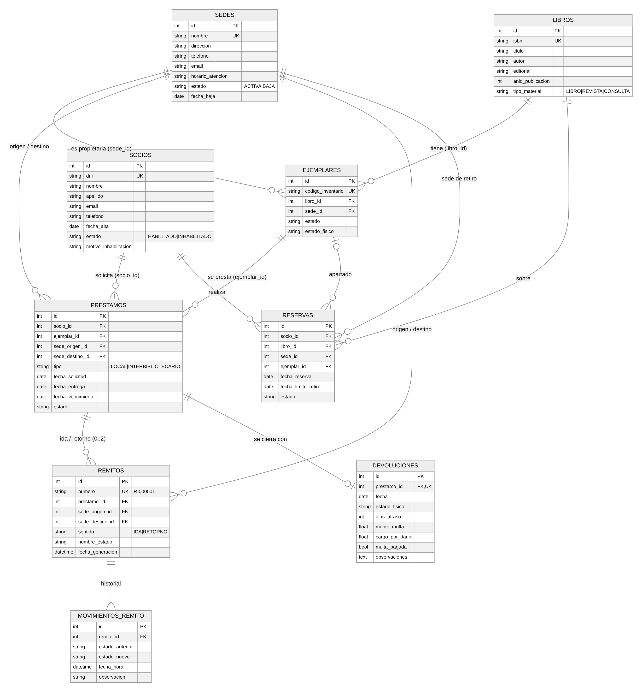
Diagrama de clases UML del dominio
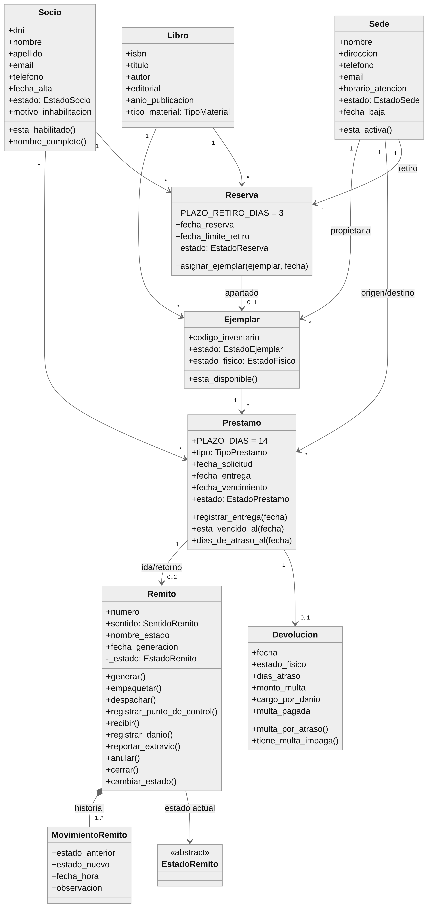
3. Arquitectura
Aplicación de escritorio en Python 3.12 con arquitectura en capas. Las dos interfaces llaman a los mismos servicios; ninguna accede a la base. Cada caso de uso abre una sesión con obtener_sesion(), usa los DAO y confirma o deshace todo junto.
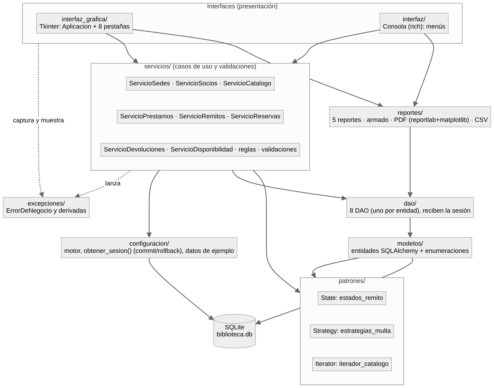
| Capa / paquete | Responsabilidad | Contenido |
|---|---|---|
interfaz_grafica/ | Ventana Tkinter: una pestaña por área, formularios modales y tablas | aplicacion.py, componentes.py, opciones.py, 8 pestania_*.py |
interfaz/ | Menús de consola con rich | menu_principal.py y un menú por área |
servicios/ | Casos de uso y validaciones de negocio; lanzan excepciones de dominio | 8 servicios + reglas.py, validaciones.py, asignacion_reservas.py |
patrones/ | State, Strategy e Iterator | estados_remito.py, estrategias_multa.py, iterador_catalogo.py |
reportes/ | Cálculo de 5 reportes y exportación PDF/CSV | un módulo por reporte, armado.py, exportar_pdf.py, exportar_csv.py, graficos.py |
dao/ | Acceso a datos, un DAO por entidad; reciben la sesión del servicio | 8 *_dao.py |
modelos/ | Entidades mapeadas con SQLAlchemy y enumeraciones | 9 clases + enumeraciones.py |
configuracion/ | Motor, sesión (commit/rollback), creación de tablas, datos de ejemplo | base_de_datos.py, datos_de_ejemplo.py |
excepciones/ | ErrorDeNegocio y 11 excepciones derivadas | errores.py |
| Aspecto | Detalle verificado |
|---|---|
| Tamaño | 79 módulos, 5.654 líneas en biblioteca/; 241 tests unitarios en tests/ (211 funciones, algunas parametrizadas). |
| Persistencia | SQLite (biblioteca.db en la carpeta de ejecución) con SQLAlchemy 2.1; claves foráneas activadas con PRAGMA en cada conexión (base_de_datos.py:15). |
| Transacciones | obtener_sesion() es un context manager: commit si no hubo error, rollback si lo hubo (base_de_datos.py:54). |
| Errores | Las interfaces capturan ErrorDeNegocio y muestran el motivo sin cerrar el programa (componentes.py:43, consola.py:100). |
| Dependencias | SQLAlchemy 2.1.4, rich 15.0.0, reportlab 5.1.0, matplotlib 3.11.2, pytest 9.1.1; Tkinter del sistema. |
| Ejecución | python main.py (consola) o python main.py --grafica (GUI). Pasos exactos en el Anexo. |
desarrollo (commit 7973887), que contiene a interfaz-grafica. La rama main solo tiene los documentos de la cátedra.4. Matriz de cumplimiento de la consigna
Cumplimiento de lo obligatorio: 98.4 % (31 cumplen, 1 parciales, 0 no cumplen, sobre 32 requisitos; un parcial vale 0,5). Los reportes sugeridos y los procesos opcionales se listan aparte y no entran en el porcentaje.
| Req. | Descripción | Estado | Dónde (archivo:línea) | Evidencia (casos E2E / tests) | Observaciones |
|---|---|---|---|---|---|
| R01 | Administrar sedes: alta y modificación con dirección, datos de contacto y horarios (Proceso obligatorio) | Cumple | biblioteca/servicios/servicio_sedes.py:21biblioteca/servicios/servicio_sedes.py:40biblioteca/interfaz_grafica/pestania_sedes.py:38 | CP-01, CP-02, CN-01, CN-02, CN-03, CN-05, CN-45, CP-29 | El defecto D2 (vaciar un dato opcional al modificar no lo borraba) se corrigió después de la auditoría; CN-45 lo verifica. |
| R02 | Sedes con estado activo / baja (baja lógica y reactivación) (Proceso obligatorio) | Cumple | biblioteca/servicios/servicio_sedes.py:62biblioteca/servicios/servicio_sedes.py:74biblioteca/modelos/sede.py:20 | CP-03, CN-04 | - |
| R03 | Administrar socios (alta, modificación, búsqueda, inhabilitación con motivo) (Proceso obligatorio) | Cumple | biblioteca/servicios/servicio_socios.py:28biblioteca/servicios/servicio_socios.py:58biblioteca/servicios/servicio_socios.py:86 | CP-04, CP-05, CP-06, CN-06, CN-08, CN-09, CP-30, CN-46, CN-43 | Búsqueda por DNI en consola y, desde la corrección de C1, también en la GUI (CP-30). |
| R04 | Administrar el catálogo de libros (alta, modificación, búsqueda) (Proceso obligatorio) | Cumple | biblioteca/servicios/servicio_catalogo.py:52biblioteca/servicios/servicio_catalogo.py:73biblioteca/servicios/servicio_catalogo.py:139 | CP-07, CN-10, CN-14, CN-15, CP-31, CN-47 | Desde la corrección de C1 el ISBN se valida con su dígito verificador (CN-47) y la GUI busca por título o autor (CP-31). |
| R05 | Administrar ejemplares físicos indicando la sede a la que pertenece cada uno (Proceso obligatorio) | Cumple | biblioteca/modelos/ejemplar.py:17biblioteca/servicios/servicio_catalogo.py:91biblioteca/servicios/servicio_catalogo.py:106biblioteca/servicios/servicio_catalogo.py:121 | CP-07, CP-09, CN-13, CN-16, CN-17 | - |
| R06 | Registrar préstamos locales (Proceso obligatorio) | Cumple | biblioteca/servicios/servicio_prestamos.py:64 | CP-10 | - |
| R07 | Registrar solicitudes de préstamo interbibliotecario indicando sede origen y destino (Proceso obligatorio) | Cumple | biblioteca/servicios/servicio_prestamos.py:91biblioteca/servicios/servicio_prestamos.py:124biblioteca/servicios/servicio_prestamos.py:141 | CP-11, CP-12, CN-24, CN-25, CN-26 | - |
| R08 | Empaquetar ejemplares (Proceso obligatorio) | Cumple | biblioteca/servicios/servicio_remitos.py:80biblioteca/patrones/estados_remito.py:69 | CP-13 | - |
| R09 | Despachar ejemplares (Proceso obligatorio) | Cumple | biblioteca/servicios/servicio_remitos.py:83biblioteca/patrones/estados_remito.py:81 | CP-13 | - |
| R10 | Recibir ejemplares (con estado físico) (Proceso obligatorio) | Cumple | biblioteca/servicios/servicio_remitos.py:89biblioteca/patrones/estados_remito.py:103 | CP-13, CP-14 | - |
| R11 | Asignar un remito a cada envío (Proceso obligatorio) | Cumple | biblioteca/servicios/servicio_remitos.py:18biblioteca/dao/remito_dao.py:26 | CP-11 | Numeración correlativa R-000001 calculada como max(id)+1; columna UNIQUE. No hay exportación ni impresión del remito como documento. |
| R12 | Trazabilidad del remito a lo largo del trayecto (estados) (Proceso obligatorio) | Cumple | biblioteca/modelos/remito.py:100biblioteca/modelos/remito.py:143biblioteca/interfaz_grafica/pestania_remitos.py:49 | CN-25, CN-26, CP-13, CP-14, CP-15, CP-16, CP-17, CP-18, CN-27, CN-28, CN-30, CN-31, CN-32 | - |
| R13 | Consultar disponibilidad (Proceso obligatorio) | Cumple | biblioteca/servicios/servicio_disponibilidad.py:26biblioteca/interfaz_grafica/pestania_catalogo.py:79 | CP-08 | - |
| R14 | Gestionar reservas (Proceso obligatorio) | Cumple | biblioteca/servicios/servicio_reservas.py:25biblioteca/servicios/servicio_reservas.py:58biblioteca/servicios/servicio_reservas.py:72biblioteca/servicios/asignacion_reservas.py:11 | CP-19, CP-20, CP-21, CN-33, CN-34, CN-35, CN-36, CN-38 | - |
| R15 | Registrar devoluciones (Proceso obligatorio) | Cumple | biblioteca/servicios/servicio_devoluciones.py:30 | CP-18, CP-19, CP-22, CP-23, CN-39, CN-40, CP-32 | - |
| R16 | Registrar el estado físico del material devuelto (Proceso obligatorio) | Cumple | biblioteca/modelos/devolucion.py:22biblioteca/servicios/servicio_devoluciones.py:66 | CP-09, CP-14, CP-15, CP-22, CP-24 | - |
| V01 | No prestar ejemplares no disponibles (Validación de negocio) | Cumple | biblioteca/servicios/servicio_prestamos.py:51 | CN-19, CN-44, CN-38; unit: test_servicio_prestamos.py::test_no_se_presta_un_ejemplar_no_disponible | - |
| V02 | No prestar material a socios inhabilitados (Validación de negocio) | Cumple | biblioteca/servicios/reglas.py:5biblioteca/servicios/servicio_prestamos.py:37 | CP-05, CN-18, CN-36 | También se valida al reservar y al entregar. |
| V03 | Controlar fechas de vencimiento de préstamos (Validación de negocio) | Cumple | biblioteca/modelos/prestamo.py:46biblioteca/modelos/prestamo.py:52biblioteca/dao/prestamo_dao.py:40biblioteca/servicios/servicio_prestamos.py:38 | CP-10, CN-22, CN-23, CP-23 | Vence a 14 días de la entrega; se bloquea al socio con vencidos o con multas impagas. |
| V04 | Mantener la trazabilidad del remito en todo el trayecto (Validación de negocio) | Parcial | biblioteca/servicios/servicio_prestamos.py:138biblioteca/servicios/servicio_prestamos.py:121biblioteca/servicios/servicio_devoluciones.py:71 | CP-13, CP-18; unit: test_datos_de_ejemplo.py::test_el_historial_de_cada_remito_de_ejemplo_esta_en_orden_cronologico (FALLA) | Defecto D1: cuando la operación recibe una fecha (datos de ejemplo), la hora del movimiento sale del reloj real (datetime.combine(fecha, datetime.now().time())). Antes de las 10:00 el remito R-000001 de ejemplo muestra "Cerrado" antes que "Recibido" y falla el test unitario test_el_historial_de_cada_remito_de_ejemplo_esta_en_orden_cronologico. |
| V05 | Evitar socios duplicados (Validación de negocio) | Cumple | biblioteca/servicios/servicio_socios.py:37biblioteca/modelos/socio.py:17 | CN-07 | - |
| V06 | Evitar duplicados en el catálogo (Validación de negocio) | Cumple | biblioteca/servicios/servicio_catalogo.py:61biblioteca/modelos/libro.py:15 | CN-11, CN-47 | - |
| V07 | Evitar ejemplares duplicados (Validación de negocio) | Cumple | biblioteca/servicios/servicio_catalogo.py:101biblioteca/modelos/ejemplar.py:15 | CN-12 | - |
| V08 | No prestar ejemplares que no pertenezcan a la sede de origen del préstamo (Validación de negocio) | Cumple | biblioteca/servicios/servicio_prestamos.py:46biblioteca/interfaz_grafica/opciones.py:26 | CN-20; unit: test_servicio_prestamos.py::test_no_se_presta_un_ejemplar_de_otra_sede | La GUI filtra los ejemplares por sede, así que el rechazo del servicio solo se ve desde código. |
| V09 | No iniciar préstamos hacia o desde una sede dada de baja (Validación de negocio) | Cumple | biblioteca/servicios/reglas.py:11biblioteca/servicios/servicio_prestamos.py:44 | CN-13, CN-21 | - |
| V10 | No iniciar reservas en una sede dada de baja (Validación de negocio) | Cumple | biblioteca/servicios/servicio_reservas.py:38 | CN-37 | - |
| V11 | No iniciar envíos hacia o desde una sede dada de baja (Validación de negocio) | Cumple | biblioteca/patrones/estados_remito.py:83 | CN-29 | - |
| P01 | Aplicar al menos dos patrones de diseño (Exigencia de la cátedra) | Cumple | biblioteca/patrones/estados_remito.py:24biblioteca/patrones/estrategias_multa.py:21biblioteca/patrones/iterador_catalogo.py:11biblioteca/dao/__init__.py:1 | CP-23, CP-25, CP-32 | Cuatro: State, Strategy, Iterator y DAO. |
| P02 | Implementar al menos cuatro reportes no triviales (Exigencia de la cátedra) | Cumple | biblioteca/reportes/prestamos_activos_y_transito.py:62biblioteca/reportes/prestamos_vencidos_y_multas.py:56biblioteca/reportes/libros_mas_solicitados.py:29biblioteca/reportes/movimiento_entre_sedes.py:45biblioteca/reportes/tasa_de_envios.py:68biblioteca/reportes/exportacion.py:10 | CP-27, CP-28, CN-41 | Cinco reportes, exportables a PDF (con gráfico) y CSV. |
| P03 | Ciclo de vida del remito y sus estados (evaluado críticamente) (Exigencia de la cátedra) | Cumple | biblioteca/patrones/estados_remito.py:24docs/ciclo_de_vida_remito.md:1 | CP-13, CN-27, CN-28, CN-30 | Nueve estados con justificación. Observación de diseño: servicio_remitos.py:45-59 decide consecuencias comparando nombre_estado con strings, fuera de las clases de estado. |
| P04 | Investigar el dominio y definir entidades, atributos y reglas (Exigencia de la cátedra) | Cumple | docs/modelo_de_dominio.md:1biblioteca/modelos/__init__.py:1 | CP-26, CN-42, CP-29 | - |
| E01 | Documento de presentación según la plantilla (grupo, objetivos, alcances, DER/UML) (Entrega) | Cumple | docs/Presentacion-grupo-G054.docxREADME.md:9 | - | No existía antes de esta auditoría; se generó sobre la plantilla con los cinco integrantes y sus legajos. |
| S01 | Reporte: préstamos activos y material en tránsito (Reporte sugerido) | Cumple | biblioteca/reportes/prestamos_activos_y_transito.py:62 | - | - |
| S02 | Reporte: préstamos vencidos y multas acumuladas (Reporte sugerido) | Cumple | biblioteca/reportes/prestamos_vencidos_y_multas.py:56 | - | - |
| S03 | Reporte: libros más solicitados inter-sedes (Reporte sugerido) | Cumple | biblioteca/reportes/libros_mas_solicitados.py:29 | - | - |
| S04 | Reporte: disponibilidad de catálogo por sede (Reporte sugerido) | Parcial | biblioteca/servicios/servicio_disponibilidad.py:26 | - | Existe como consulta por libro, no como reporte de todo el catálogo ni exportable. |
| S05 | Reporte: tasa de envíos exitosos e incidencias (Reporte sugerido) | Cumple | biblioteca/reportes/tasa_de_envios.py:68 | - | - |
| S06 | Reporte: movimiento entre sedes y tiempo promedio de tránsito (Reporte sugerido) | Cumple | biblioteca/reportes/movimiento_entre_sedes.py:45 | - | - |
| O01 | Envío de notificaciones (Proceso opcional) | No implementado | - | - | - |
| O02 | Historial de lecturas (Proceso opcional) | No implementado | biblioteca/servicios/servicio_prestamos.py:165 | - | Solo se pueden listar los préstamos de un socio (consola). |
| O03 | Recomendaciones (Proceso opcional) | No implementado | - | - | - |
| O04 | Inventario con códigos (Proceso opcional) | Parcial | biblioteca/modelos/ejemplar.py:15 | - | Código de inventario único por ejemplar; no hay procesos de inventario. |
| O05 | Revisión del estado de recepción (extravío, daño, destrucción) (Proceso opcional) | Cumple | biblioteca/patrones/estados_remito.py:123biblioteca/patrones/estados_remito.py:148 | - | Extravío y daño implementados; "destrucción" no es un estado propio (se resuelve con daño + baja del ejemplar). |
Faltantes y riesgos para la defensa (por prioridad)
| # | Prioridad | Hallazgo | Arreglo sugerido |
|---|---|---|---|
| D1 | Alta | El test unitario de datos de ejemplo falla antes de las 10:00 y el remito de ejemplo muestra el cierre antes de la recepción. Al recibir una fecha, préstamos y devoluciones completan la hora con datetime.now(). En los datos de ejemplo la recepción es a las 10:00 y la entrega toma la hora real; antes de esa hora el trayecto de R-000001 queda fuera de orden. En una defensa a la mañana, pytest muestra 1 fallo (227 de 228 pasan) y la pestaña Remitos muestra el desorden. | Que entregar_prestamo, solicitar_prestamo_interbibliotecario, cancelar_prestamo y registrar_devolucion acepten fecha_hora (datetime) en lugar de combinar con el reloj, y que datos_de_ejemplo.py pase horas explícitas (por ejemplo _momento(23, 11) para la entrega). Alternativa mínima: usar max(fecha_hora, último movimiento). |
| F1 | Media | El remito no se puede exportar ni imprimir como documento. El remito existe como entidad con número, sedes, sentido y trayecto, y se ve en pantalla, pero no hay salida en PDF/CSV del remito. Si en la defensa se pide "mostrar el remito" solo se puede mostrar la pantalla o un reporte. | Agregar un exportador de remito (DocumentoReporte con cabecera: número, sentido, sedes, ejemplar, socio; y una tabla con el trayecto) reutilizando exportar_pdf/exportar_csv, con un botón "Exportar remito" en la pestaña. |
| P1 | Media | Las consecuencias del State se deciden comparando strings fuera de los estados. _resolver_consecuencias pregunta remito.nombre_estado == "Daniado" / "Cerrado". Es una cadena de if por estado, justo lo que el patrón evita, y un error de tipeo no lo detecta nadie. | Que cada estado devuelva o registre las consecuencias pendientes (por ejemplo, un método hook en EstadoRemito), o comparar con las clases (isinstance(remito.estado, Daniado)) en lugar de strings. |
| P3 | Baja | El ciclo de vida del ejemplar no usa State. El ejemplar tiene 7 estados con transiciones repartidas entre servicios y estados del remito (asignaciones ejemplar.estado = ...). No hay una clase que diga qué transiciones son válidas. | No es obligatorio (ya hay 4 patrones). Si se pregunta en la defensa: es el candidato natural a un segundo State. |
| S4 | Baja | Reporte sugerido de disponibilidad por sede no está como reporte. La consigna lo sugiere; hay una consulta por libro, no un reporte exportable de todo el catálogo. | Opcional: reporte con libros × sedes reutilizando CatalogoEjemplares. |
Corregidos después de la auditoría: D2 (al modificar, vaciar un dato opcional no lo borra), P2 (la política de multas elegida no se guarda), C1 (detalles menores de validación e interfaz). Detalle en la sección 9.
5. Patrones de diseño
La consigna pide al menos dos. Se verificaron cuatro aplicados de forma explícita, más algunos usos implícitos.
State: ciclo de vida del remito
| Qué resuelve | Un remito pasa por 9 estados y en cada uno solo algunas acciones son válidas (no se recibe lo que no salió, no se anula lo que ya viaja). Además cada transición tiene consecuencias distintas sobre el préstamo y el ejemplar según el remito sea de ida o de retorno. |
| Dónde | EstadoRemito (abstracta, estados_remito.py:24) implementa todas las acciones lanzando TransicionRemitoInvalida; cada estado concreto (Generado :64, Empaquetado :76, EnViaje :95, Recibido :143, …) redefine solo las que admite. Remito (remito.py:12) es el contexto: delega en self._estado y registra cada cambio en MovimientoRemito (remito.py:100). El estado se persiste por nombre y se reconstruye con @reconstructor (remito.py:49). |
| Por qué | Sin el patrón, cada acción sería un if remito.estado == ... repetido en el servicio, con reglas dispersas y difíciles de revisar. Con State, agregar un estado es agregar una clase, y una acción no permitida falla siempre igual sin tocar el estado (CN-27, CN-28, CN-30). |
class EstadoRemito(ABC):
"""Estado abstracto. Por defecto ninguna acción está permitida."""
@property
@abstractmethod
def nombre(self):
"""Nombre con el que el estado se guarda en la base."""
@property
def es_final(self):
return False
def _no_permitida(self, accion):
raise TransicionRemitoInvalida(f"No se puede {accion} un remito en estado {texto_estado(self.nombre)}.")class Empaquetado(EstadoRemito):
"""El ejemplar está embalado en la sede de origen esperando salir."""
nombre = "Empaquetado"
def despachar(self, remito, fecha_hora, observacion):
# La consigna prohíbe iniciar envíos hacia o desde una sede dada de baja.
for rol, sede in (("origen", remito.sede_origen), ("destino", remito.sede_destino)):
if not sede.esta_activa:
raise SedeDadaDeBaja(f"No se puede despachar: la sede de {rol} '{sede.nombre}' está dada de baja.")
remito.ejemplar.estado = EstadoEjemplar.EN_TRANSITO
if remito.sentido == SentidoRemito.IDA:
remito.prestamo.estado = EstadoPrestamo.EN_ENVIO
remito.cambiar_estado(Despachado(), fecha_hora, observacion)
def anular(self, remito, fecha_hora, motivo):
_anular(remito, fecha_hora, motivo) if movimiento.estado_nuevo == "EnTransito":
return movimiento.observacion
return None
def cambiar_estado(self, nuevo_estado, fecha_hora, observacion=None):
"""Lo usan los estados para pasar al siguiente. Registra el movimiento para la trazabilidad."""
self.movimientos.append(
MovimientoRemito(
estado_anterior=self.nombre_estado,
estado_nuevo=nuevo_estado.nombre,
fecha_hora=fecha_hora,
observacion=observacion,
)
)
self._estado = nuevo_estado
self.nombre_estado = nuevo_estado.nombre
# Acciones del remito: cada una se delega en el estado actual.
def empaquetar(self, fecha_hora, observacion=None):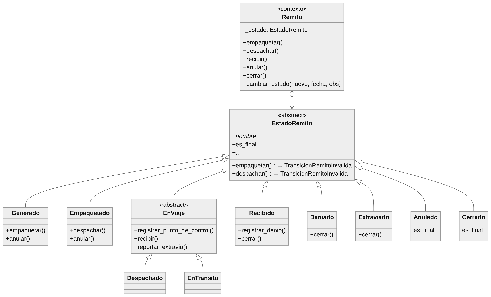
Strategy: política de multas
| Qué resuelve | La multa por atraso puede calcularse de varias formas (por tipo de material, monto fijo por día, condonación) y la biblioteca la cambia sin cambiar el proceso de devolución. |
| Dónde | EstrategiaMulta (estrategias_multa.py:21) con MultaPorDiasDeAtraso (:34), MultaPorTipoDeMaterial (:47) y SinMulta (:66). CalculadoraDeMultas (:77) es el contexto con cambiar_estrategia. Cliente: ServicioDevoluciones (servicio_devoluciones.py:23). La GUI la cambia en ejecución desde un combo (pestania_devoluciones.py:52), comprobado en CP-25. |
| Por qué | Sin el patrón, el servicio tendría un if politica == ... y cada política nueva obligaría a modificarlo. A diferencia de State, la estrategia la elige quien configura el contexto, no el objeto. |
class EstrategiaMulta(ABC):
"""Calcula el monto de la multa a partir de los días de atraso y del material."""
@property
@abstractmethod
def descripcion(self):
"""Texto que se muestra al usuario para identificar la política."""
@abstractmethod
def calcular(self, dias_atraso, tipo_material):
"""Devuelve el monto en pesos. Con cero días de atraso el monto siempre es cero."""
class CalculadoraDeMultas:
"""Contexto del patrón: delega el cálculo en la estrategia configurada."""
CARGO_POR_DANIO = 1000.0
def __init__(self, estrategia):
self._estrategia = estrategia
@property
def estrategia(self):
return self._estrategia
def cambiar_estrategia(self, estrategia):
self._estrategia = estrategia
def calcular(self, prestamo, fecha_devolucion):
"""Devuelve (días de atraso, monto) para un préstamo devuelto en la fecha indicada."""
dias_atraso = prestamo.dias_de_atraso_al(fecha_devolucion)
monto = self._estrategia.calcular(dias_atraso, prestamo.ejemplar.libro.tipo_material) if dias_atraso else 0.0
return dias_atraso, monto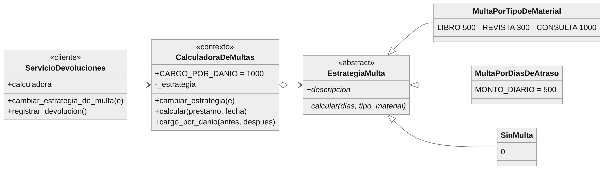
Iterator: recorrido del catálogo de ejemplares
| Qué resuelve | Varios casos de uso recorren ejemplares filtrando por sede, libro, disponibilidad o 'en circulación'. |
| Dónde | CatalogoEjemplares (iterador_catalogo.py:31) es el agregado y oculta la lista; IteradorEjemplares (:11) implementa __iter__/__next__ y saltea lo que no cumple la condición. Lo usan ServicioDisponibilidad (servicio_disponibilidad.py:34) y ServicioReservas (servicio_reservas.py:40). |
| Por qué | Sin el patrón, cada servicio repetiría los mismos for con if y dependería de la estructura interna de la colección. |
class IteradorEjemplares:
"""Recorre una lista de ejemplares devolviendo solo los que cumplen la condición."""
def __init__(self, ejemplares, condicion=None):
self._ejemplares = ejemplares
self._condicion = condicion or (lambda ejemplar: True)
self._posicion = 0
def __iter__(self):
return self
def __next__(self):
while self._posicion < len(self._ejemplares):
ejemplar = self._ejemplares[self._posicion]
self._posicion += 1
if self._condicion(ejemplar):
return ejemplar
raise StopIteration
class CatalogoEjemplares:
"""Colección de ejemplares que se recorre con iteradores, sin exponer la lista interna."""
def __init__(self, ejemplares):
self._ejemplares = list(ejemplares)
def __iter__(self):
"""Recorre todos los ejemplares."""
return IteradorEjemplares(self._ejemplares)
def por_sede(self, id_sede):
return IteradorEjemplares(self._ejemplares, lambda e: e.sede_id == id_sede)
def por_libro(self, id_libro):
return IteradorEjemplares(self._ejemplares, lambda e: e.libro_id == id_libro)
def disponibles(self, id_sede=None):
"""Recorre los ejemplares disponibles, opcionalmente solo los de una sede."""
return IteradorEjemplares(
self._ejemplares,
lambda e: e.estado == EstadoEjemplar.DISPONIBLE and (id_sede is None or e.sede_id == id_sede),
)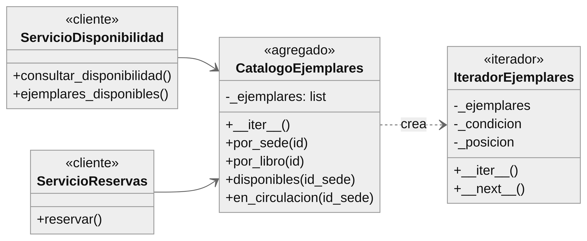
DAO: acceso a datos
| Qué resuelve | Separar las consultas SQLAlchemy de las reglas de negocio y que un caso de uso confirme o deshaga todas sus operaciones juntas. |
| Dónde | Un DAO por entidad en biblioteca/dao/ (por ejemplo PrestamoDAO, prestamo_dao.py:6). Reciben la sesión abierta por el servicio con obtener_sesion() (base_de_datos.py:54), que hace commit o rollback. |
| Por qué | Sin DAO, los servicios mezclarían consultas con reglas y cada uno manejaría su propia transacción. Es el patrón de la guía 'Objetos de acceso a datos' de la cátedra, sobre ORM en lugar de sqlite3 directo. |
class PrestamoDAO:
def __init__(self, sesion):
self.sesion = sesion
def crear(self, prestamo):
self.sesion.add(prestamo)
self.sesion.flush()
return prestamo
def actualizar(self, prestamo):
self.sesion.flush()
return prestamo
def obtener_por_id(self, id_prestamo):
return self.sesion.get(Prestamo, id_prestamo)@contextmanager
def obtener_sesion():
"""Context manager que abre una sesión, confirma los cambios si no hubo
errores, los deshace si los hubo y siempre cierra la sesión."""
if motor is None:
configurar_base_de_datos()
sesion = Sesion()
try:
yield sesion
sesion.commit()
except Exception:
sesion.rollback()
raise
finally:
sesion.close()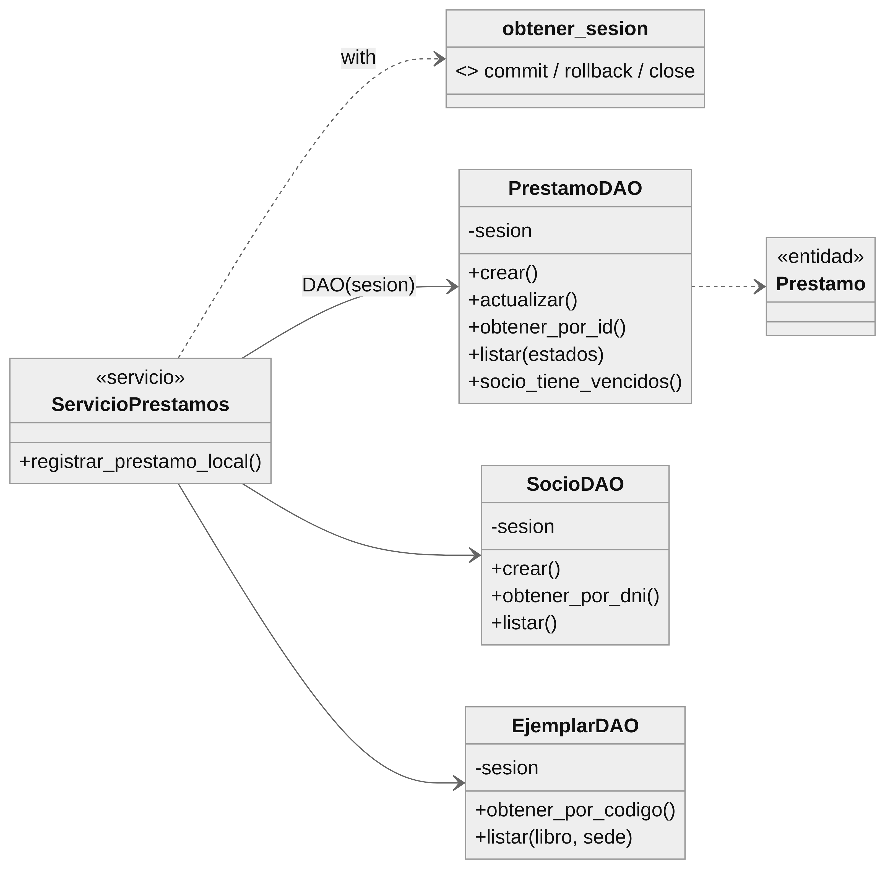
Usos implícitos, problemas de aplicación y patrones que faltan
| Tipo | Detalle | Dónde |
|---|---|---|
| Implícito | Fábrica simple / registro: crear_estado(nombre) reconstruye el estado desde el nombre guardado. | biblioteca/patrones/estados_remito.py:213 |
| Implícito | Estrategia con funciones: EXPORTADORES = {'pdf': ..., 'csv': ...} elige el exportador por formato. | biblioteca/reportes/exportacion.py:7 |
| Implícito | Unidad de trabajo: el context manager de sesión agrupa las operaciones del caso de uso. | biblioteca/configuracion/base_de_datos.py:54 |
| No es Singleton | El motor es una variable global de módulo (motor), no un Singleton de la cátedra. Funciona, pero no conviene presentarlo como patrón. | biblioteca/configuracion/base_de_datos.py:12 |
| Mal aplicado (P1) | Las consecuencias del State se resuelven en el servicio comparando nombre_estado con strings. | biblioteca/servicios/servicio_remitos.py:43 |
| Resuelto (P2) | La estrategia vigente se guarda en la tabla configuracion y se recupera al iniciar; consola y GUI comparten la política. | biblioteca/servicios/servicio_devoluciones.py:18 |
| Falta (P3) | El ejemplar tiene 7 estados manejados con enum y asignaciones dispersas; es el candidato natural a otro State. | biblioteca/modelos/enumeraciones.py:25 |
| Repetición | Los 8 DAO repiten crear/actualizar/obtener_por_id; un DAO base genérico lo evitaría. | biblioteca/dao/*.py |
6. Lógica de la biblioteca y de los remitos
Entidades
| Entidad | Identificador de negocio | Estados | Regla principal |
|---|---|---|---|
| Sede | nombre (único, sin distinguir mayúsculas) | ACTIVA, BAJA | Baja lógica: conserva historial y no inicia operaciones |
| Socio | DNI de 7 u 8 dígitos (único) | HABILITADO, INHABILITADO (con motivo) | Inhabilitado no recibe préstamos ni reserva |
| Libro | ISBN de 10 o 13 dígitos (único) | - | tipo_material fija la tarifa de multa |
| Ejemplar | código de inventario (único, mayúsculas) | DISPONIBLE, RESERVADO, PRESTADO, EN_TRANSITO, EN_REPARACION, EXTRAVIADO, BAJA | Pertenece siempre a la misma sede aunque viaje |
| Préstamo | id | SOLICITADO, EN_ENVIO, LISTO_PARA_RETIRO, ACTIVO, DEVUELTO, CANCELADO | 14 días desde la entrega; 'vencido' es calculado |
| Reserva | id | PENDIENTE, DISPONIBLE, CUMPLIDA, CANCELADA, VENCIDA | Sobre el libro; FIFO; 3 días para retirar |
| Remito | número R-000001 (único) | 9 estados (State) | Ida y retorno; cada cambio deja un movimiento |
| Devolución | uno por préstamo | multa pagada sí/no | Multa por atraso (Strategy) + $1000 por daño nuevo |
Reglas de negocio verificadas
| Regla | Código | Caso E2E |
|---|---|---|
| Un ejemplar prestado no se vuelve a prestar | servicio_prestamos.py:60 | CN-19 |
| Un ejemplar en reparación no se presta | servicio_prestamos.py:60 | CN-44 |
| Un ejemplar apartado solo lo retira el titular de la reserva | servicio_prestamos.py:53 | CP-19, CN-38 |
| No se presta a socios inhabilitados, con vencidos o con multas impagas | servicio_prestamos.py:37-43 | CN-18, CN-22, CN-23 |
| Solo se prestan ejemplares de la sede de origen | servicio_prestamos.py:46 | CN-20 (GUI) y test unitario |
| No se opera con sedes dadas de baja (préstamo, reserva, despacho, alta de ejemplar) | reglas.py:11, estados_remito.py:83, servicio_catalogo.py:97 | CN-13, CN-21, CN-29, CN-37 |
| Solo se reserva si la sede tiene el libro y ninguno disponible | servicio_reservas.py:40-49 | CN-33, CN-34 |
| Se cobra $1000 solo por un daño nuevo; el ejemplar pasa a reparación | estrategias_multa.py:98, servicio_devoluciones.py:74 | CP-24 |
| Una devolución interbibliotecaria genera el remito de retorno | servicio_devoluciones.py:67 | CP-18 |
Diagramas de estados
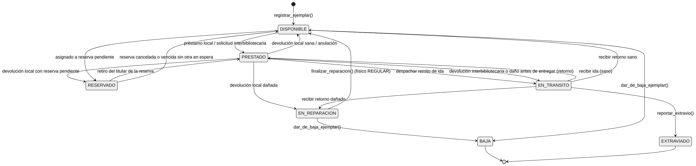
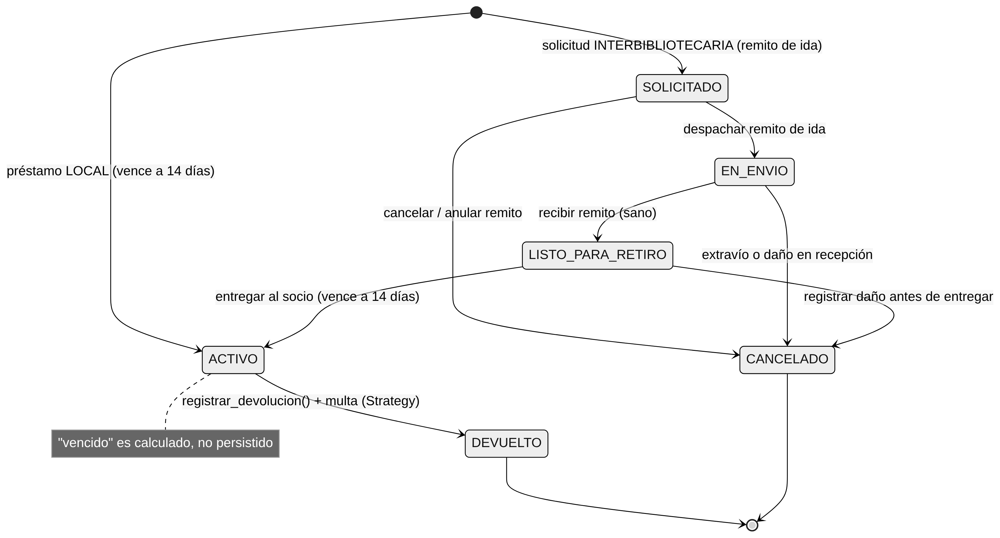
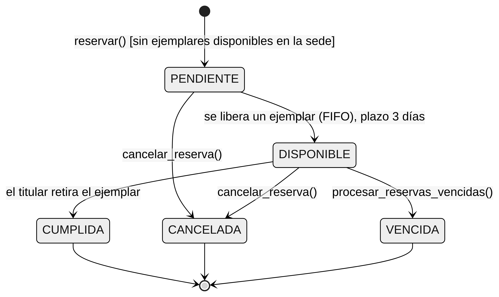
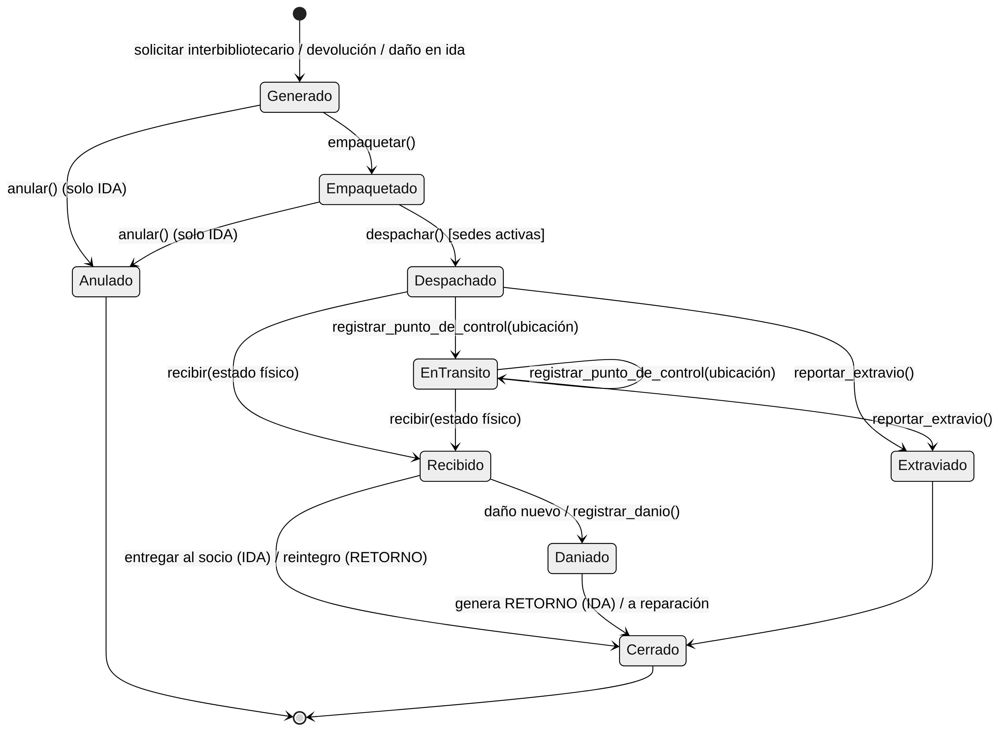
Remitos
| Tipo (sentido) | Cuándo se genera | Origen → destino | Quién lo genera |
|---|---|---|---|
| IDA | Al registrar una solicitud de préstamo interbibliotecario | Sede propietaria → sede de retiro | ServicioPrestamos.solicitar_prestamo_interbibliotecario (servicio_prestamos.py:121) |
| RETORNO por devolución | Al registrar la devolución de un préstamo interbibliotecario | Sede de retiro → sede propietaria | ServicioDevoluciones.registrar_devolucion (servicio_devoluciones.py:70) |
| RETORNO por daño | Cuando un remito de ida llega dañado o se registra daño antes de entregar | Sede de retiro → sede propietaria | _resolver_consecuencias (servicio_remitos.py:47) |
| Aspecto | Detalle |
|---|---|
| Datos que lleva | número, préstamo (socio y ejemplar), sede de origen, sede de destino, sentido, estado, fecha de generación y el historial de movimientos (estado anterior, nuevo, fecha y hora, observación: ubicación, motivo o daño). |
| Numeración | Correlativa con formato R-000001, calculada como max(id)+1 en RemitoDAO.siguiente_numero (remito_dao.py:26); columna numero UNIQUE. |
| Clase que lo genera | Remito.generar (remito.py:55), llamada desde generar_remito (servicio_remitos.py:18). |
| Formato de exportación | No implementado. El remito se ve en la pestaña Remitos (con su trayecto) y en el menú de consola 'Ver trazabilidad'. Los únicos archivos exportables son los 5 reportes (PDF/CSV); el reporte 1 lista el material en tránsito y el 5 las incidencias de remitos. |
Ejemplos reales de cada tipo de remito
Como no hay exportación del remito, la evidencia es la pantalla real del sistema con los datos de ejemplo (CP-26) y la salida real de consola (ejemplos/remitos/trazabilidad_remitos_consola.txt).
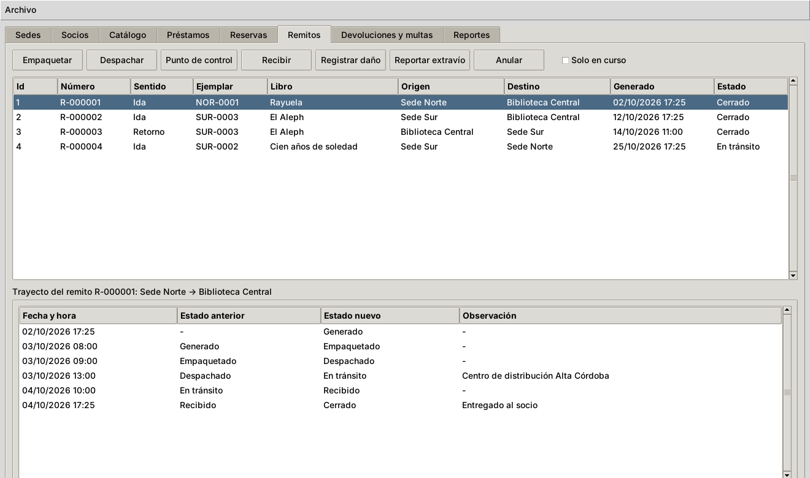
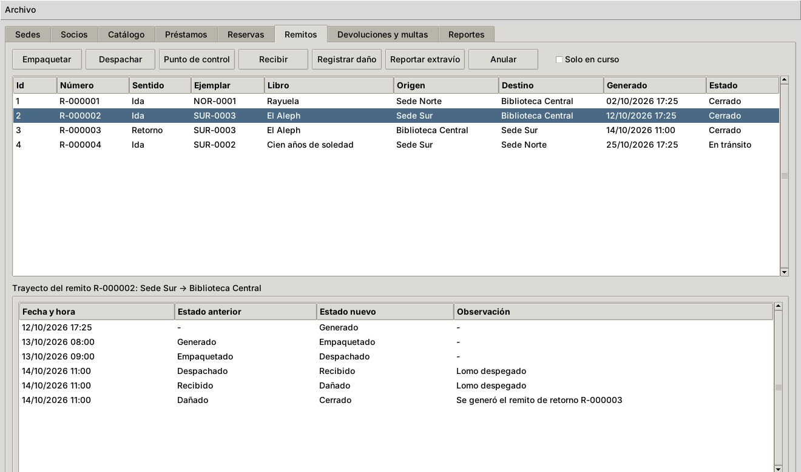
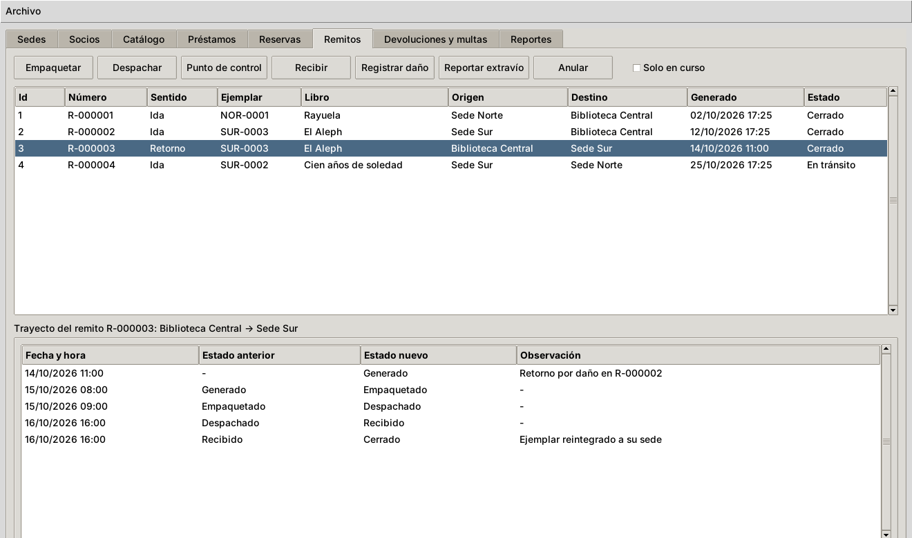
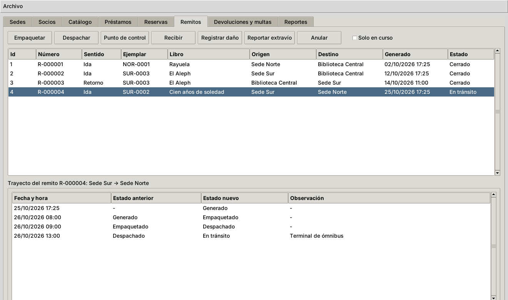
Reportes exportados por el sistema
| Reporte | CSV | |
|---|---|---|
| Préstamos activos y material en tránsito | reporte_activos.pdf | reporte_activos.csv |
| Préstamos vencidos y multas acumuladas | reporte_vencidos.pdf | reporte_vencidos.csv |
| Libros más solicitados inter-sedes | reporte_solicitados.pdf | reporte_solicitados.csv |
| Movimiento de ejemplares entre sedes | reporte_movimientos.pdf | reporte_movimientos.csv |
| Tasa de envíos exitosos e incidencias | reporte_tasa.pdf | reporte_tasa.csv |
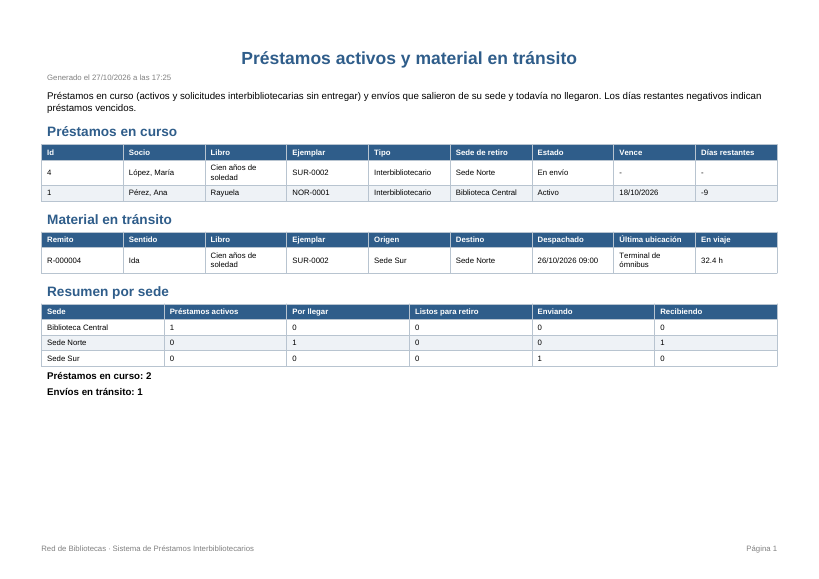
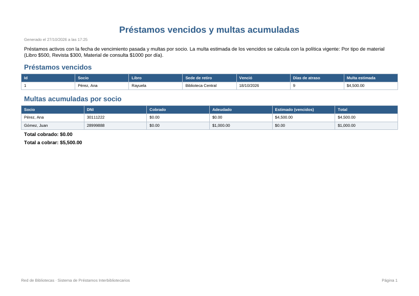
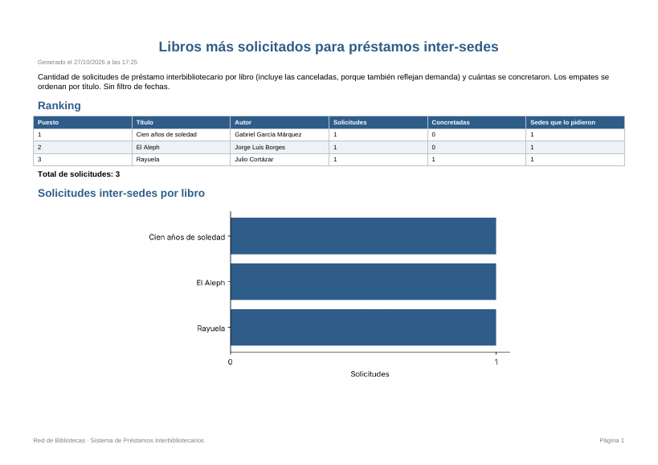
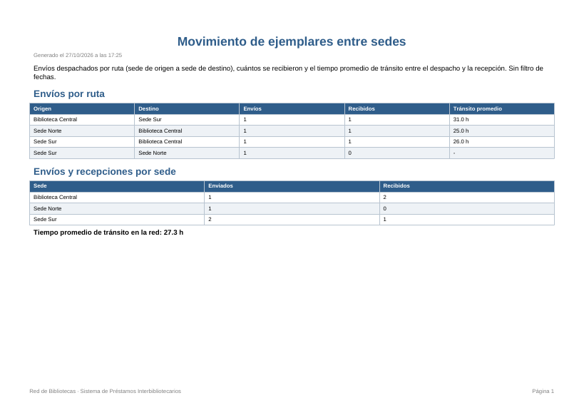
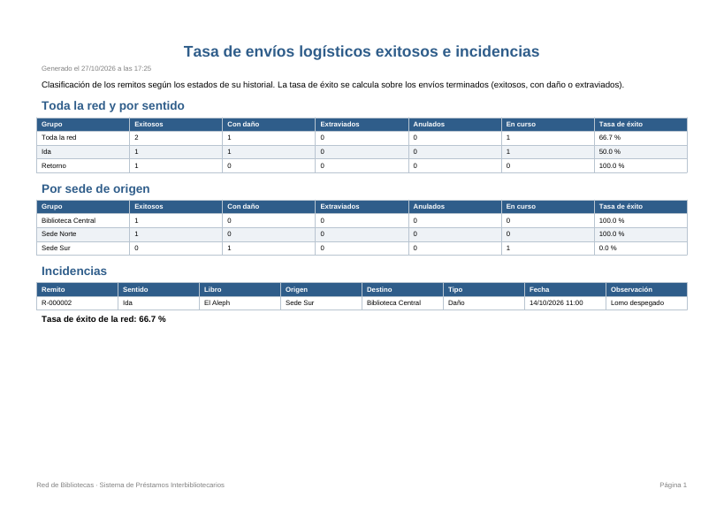
7. Flujos positivos y negativos
Cada flujo se ejecutó de verdad sobre la interfaz gráfica (Xvfb, 1320×780) con el driver E2E. Las capturas son de esa ejecución. Los diálogos no muestran barra de título porque Xvfb corre sin administrador de ventanas; el título ('Listo', 'Operación rechazada', 'Atención', 'Confirmar') lo verifica la prueba.
Sedes
CP-01 · Alta de sede con todos sus datosPasa
| Tipo | Flujo positivo |
| Precondiciones | el usuario abrió la pestaña "Sedes" sin sedes cargadas |
| Pasos | 1. el usuario hace click en "Nueva sede" 2. el usuario ingresa "Sede Oeste", "Av. Sabattini 2500", "351-4222222", "oeste@biblio.org" y "Lun a Sab 9 a 18" 3. el usuario hace click en "Aceptar" |
| Resultado esperado | el sistema muestra el mensaje "Sede registrada." la grilla muestra "Sede Oeste" con estado "Activa" |
| Resultado de la ejecución | Pasa |
| Requisitos | R01 |
| Prueba | e2e/test_e2e_sedes.py::test_cp01_alta_de_sede |
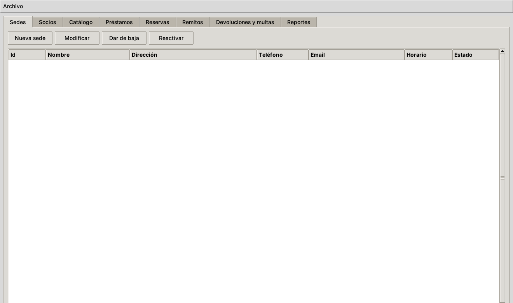
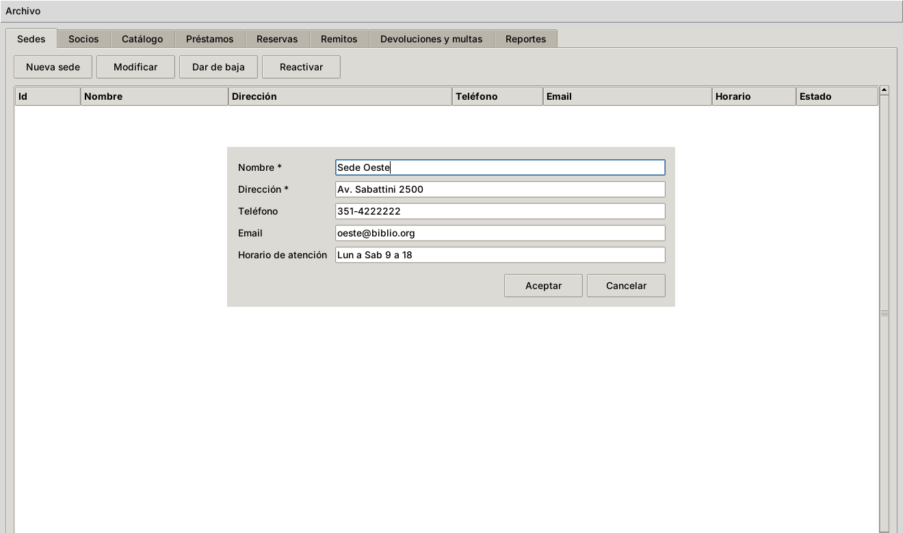
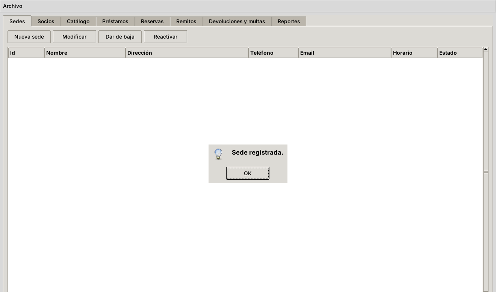
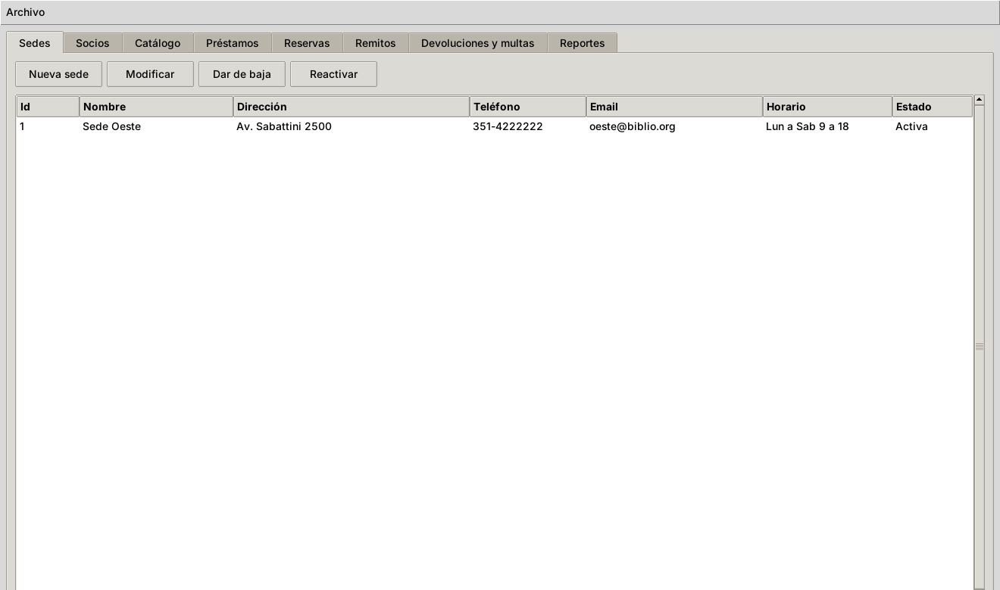
CP-02 · Modificar teléfono y horario de una sedePasa
| Tipo | Flujo positivo |
| Precondiciones | existe la sede "Sede Norte" |
| Pasos | 1. el usuario selecciona "Sede Norte" y hace click en "Modificar" 2. el usuario ingresa "351-4999999" en "Teléfono" y "Lun a Vie 8 a 14" en "Horario de atención" 3. el usuario hace click en "Aceptar" |
| Resultado esperado | el sistema muestra el mensaje "Sede modificada." la grilla muestra el teléfono y el horario nuevos |
| Resultado de la ejecución | Pasa |
| Requisitos | R01 |
| Prueba | e2e/test_e2e_sedes.py::test_cp02_modificar_sede |
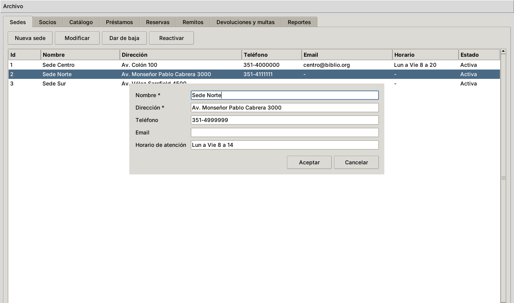
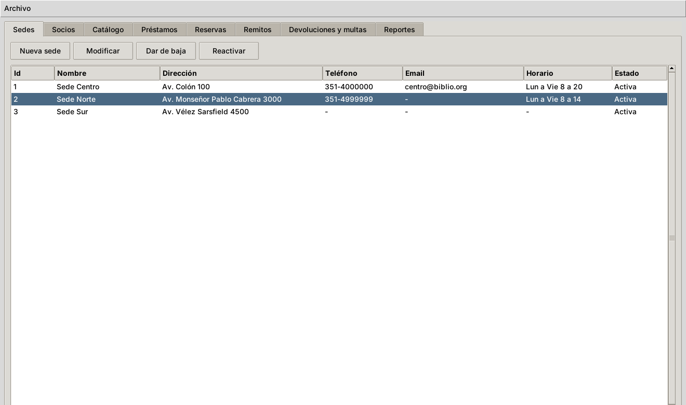
CP-03 · Dar de baja y reactivar una sedePasa
| Tipo | Flujo positivo |
| Precondiciones | existe la sede activa "Sede Sur" |
| Pasos | 1. el usuario selecciona "Sede Sur" y hace click en "Dar de baja" 2. el usuario confirma con "Sí" 3. el usuario hace click en "Reactivar" |
| Resultado esperado | el sistema muestra el mensaje "Sede dada de baja." y la sede queda "Dada de baja" el sistema muestra el mensaje "Sede reactivada." y la sede vuelve a "Activa" |
| Resultado de la ejecución | Pasa |
| Requisitos | R02 |
| Prueba | e2e/test_e2e_sedes.py::test_cp03_baja_logica_y_reactivacion_de_sede |
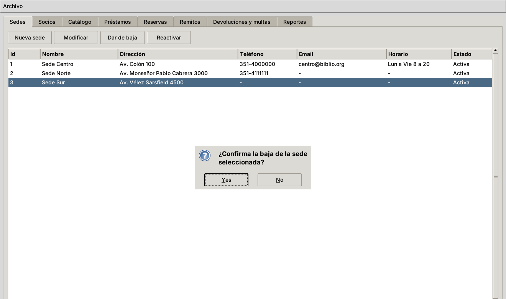
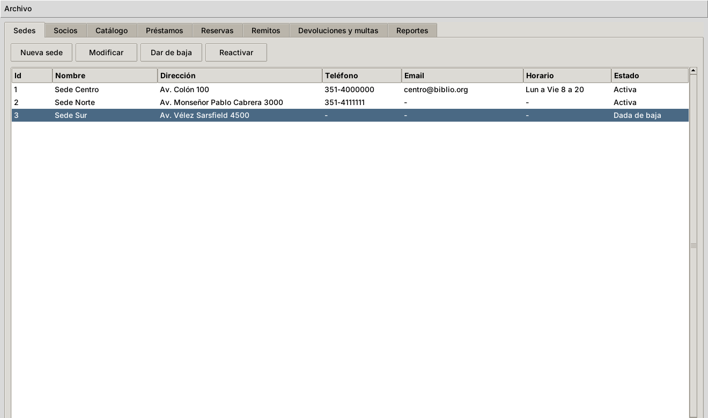
CN-01 · Alta sin el nombre obligatorioPasa
| Tipo | Flujo negativo |
| Precondiciones | el usuario abrió la pestaña "Sedes" |
| Pasos | 1. el usuario hace click en "Nueva sede" 2. el usuario ingresa solo la dirección y hace click en "Aceptar" |
| Resultado esperado | el sistema muestra el aviso "Complete el dato 'Nombre'." no se registra ninguna sede |
| Resultado de la ejecución | Pasa |
| Requisitos | R01 |
| Prueba | e2e/test_e2e_sedes.py::test_cn01_alta_de_sede_sin_datos_obligatorios |
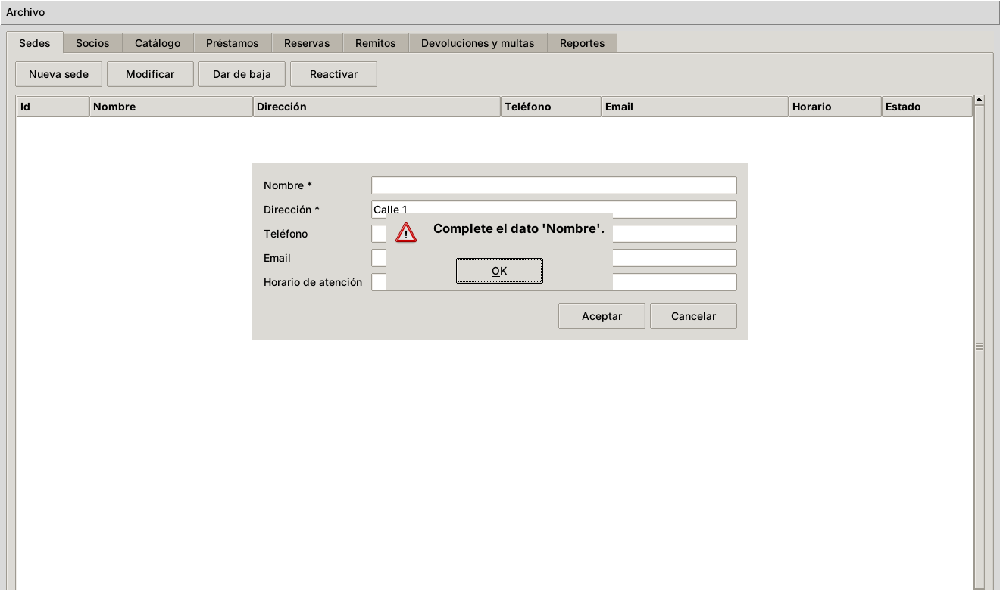
CN-02 · Sede con nombre repetido (sin distinguir mayúsculas)Pasa
| Tipo | Flujo negativo |
| Precondiciones | existe la sede "Sede Centro" |
| Pasos | 1. el usuario registra una sede llamada "sede centro" |
| Resultado esperado | el sistema muestra el mensaje "Operación rechazada": "Ya existe una sede llamada 'sede centro'." |
| Resultado de la ejecución | Pasa |
| Requisitos | R01 |
| Prueba | e2e/test_e2e_sedes.py::test_cn02_sede_con_nombre_duplicado |
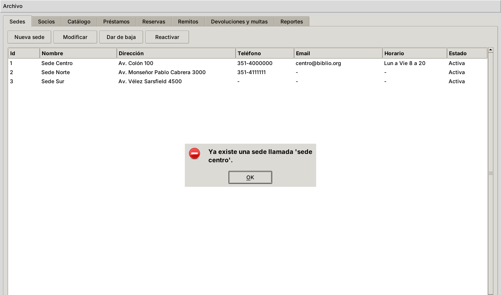
CN-03 · Email con formato inválidoPasa
| Tipo | Flujo negativo |
| Precondiciones | el usuario abrió la pestaña "Sedes" |
| Pasos | 1. el usuario registra una sede con email "este-arroba" |
| Resultado esperado | el sistema muestra el mensaje "Operación rechazada": "El email 'este-arroba' no tiene un formato válido." |
| Resultado de la ejecución | Pasa |
| Requisitos | R01 |
| Prueba | e2e/test_e2e_sedes.py::test_cn03_sede_con_email_invalido |
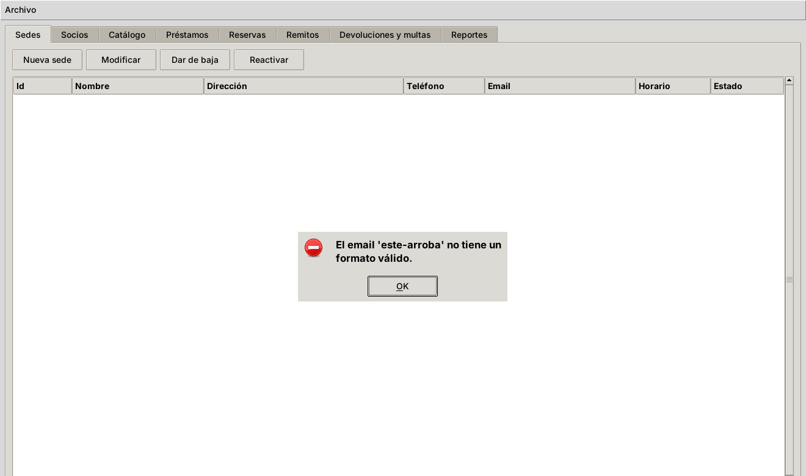
CN-04 · Dar de baja una sede ya dada de bajaPasa
| Tipo | Flujo negativo |
| Precondiciones | la sede "Sede Sur" está dada de baja |
| Pasos | 1. el usuario selecciona "Sede Sur", hace click en "Dar de baja" y confirma |
| Resultado esperado | el sistema muestra el mensaje "Operación rechazada": "La sede 'Sede Sur' ya está dada de baja." |
| Resultado de la ejecución | Pasa |
| Requisitos | R02 |
| Prueba | e2e/test_e2e_sedes.py::test_cn04_dar_de_baja_una_sede_ya_dada_de_baja |
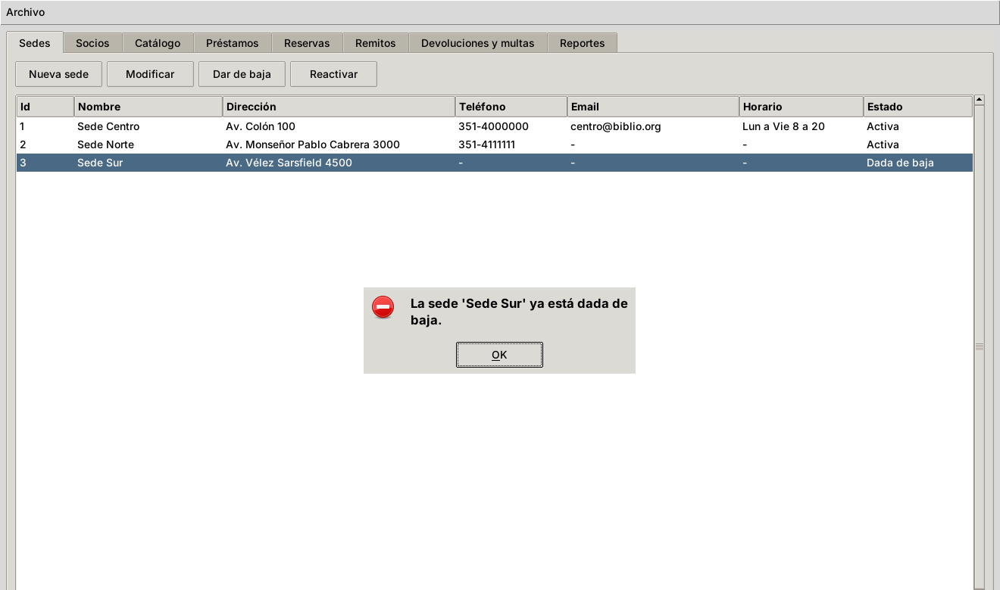
CN-05 · Modificar sin seleccionar una filaPasa
| Tipo | Flujo negativo |
| Precondiciones | existen sedes cargadas y ninguna está seleccionada |
| Pasos | 1. el usuario hace click en "Modificar" |
| Resultado esperado | el sistema muestra el aviso "Seleccione una sede en la lista." |
| Resultado de la ejecución | Pasa |
| Requisitos | R01 |
| Prueba | e2e/test_e2e_sedes.py::test_cn05_modificar_sin_seleccionar_una_sede |
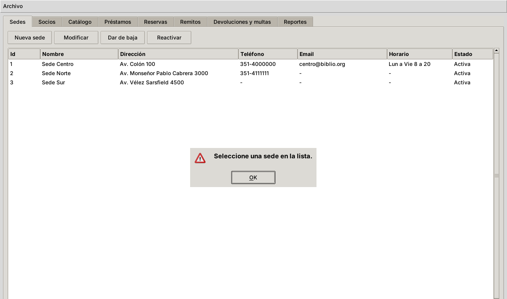
CN-45 · Vaciar un dato opcional al modificar lo borraPasa
| Tipo | Flujo negativo |
| Precondiciones | la sede "Sede Centro" tiene teléfono y email |
| Pasos | 1. el usuario selecciona "Sede Centro", hace click en "Modificar" 2. el usuario borra "Teléfono" y "Email" y acepta |
| Resultado esperado | el sistema muestra el mensaje "Sede modificada." la grilla muestra teléfono y email vacíos |
| Resultado de la ejecución | Pasa |
| Requisitos | R01 |
| Prueba | e2e/test_e2e_sedes.py::test_cn45_vaciar_un_dato_opcional_al_modificar_la_sede |
Socios
CP-04 · Alta de socio con DNI con puntosPasa
| Tipo | Flujo positivo |
| Precondiciones | el usuario abrió la pestaña "Socios" |
| Pasos | 1. el usuario hace click en "Nuevo socio" 2. el usuario ingresa "30.555.666", "Carla", "Ruiz" y acepta |
| Resultado esperado | el sistema muestra el mensaje "Socio registrado." la grilla muestra DNI "30555666", "Ruiz, Carla" y estado "Habilitado" |
| Resultado de la ejecución | Pasa |
| Requisitos | R03 |
| Prueba | e2e/test_e2e_socios.py::test_cp04_alta_de_socio_con_dni_normalizado |
CP-05 · Inhabilitar con motivo y volver a habilitarPasa
| Tipo | Flujo positivo |
| Precondiciones | existe el socio habilitado DNI "28999888" |
| Pasos | 1. el usuario lo inhabilita con el motivo "Extravió un ejemplar" 2. el usuario hace click en "Habilitar" |
| Resultado esperado | el sistema muestra "Socio inhabilitado." y la grilla muestra el estado y el motivo el sistema muestra "Socio habilitado." y el estado vuelve a "Habilitado" |
| Resultado de la ejecución | Pasa |
| Requisitos | R03, V02 |
| Prueba | e2e/test_e2e_socios.py::test_cp05_inhabilitar_y_rehabilitar_socio |
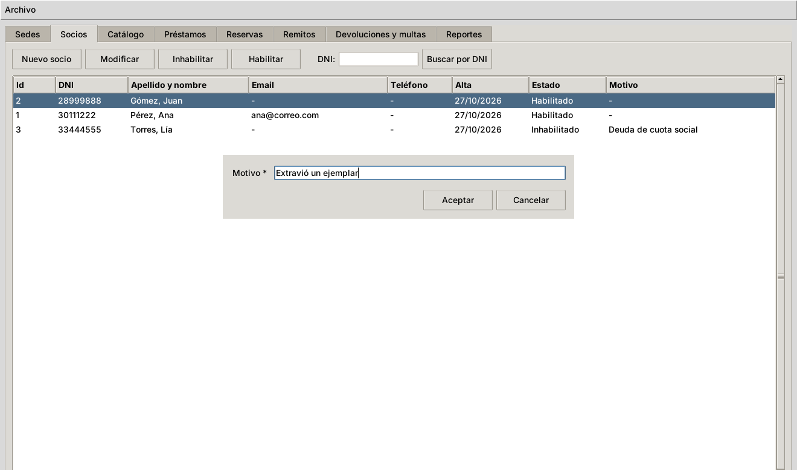
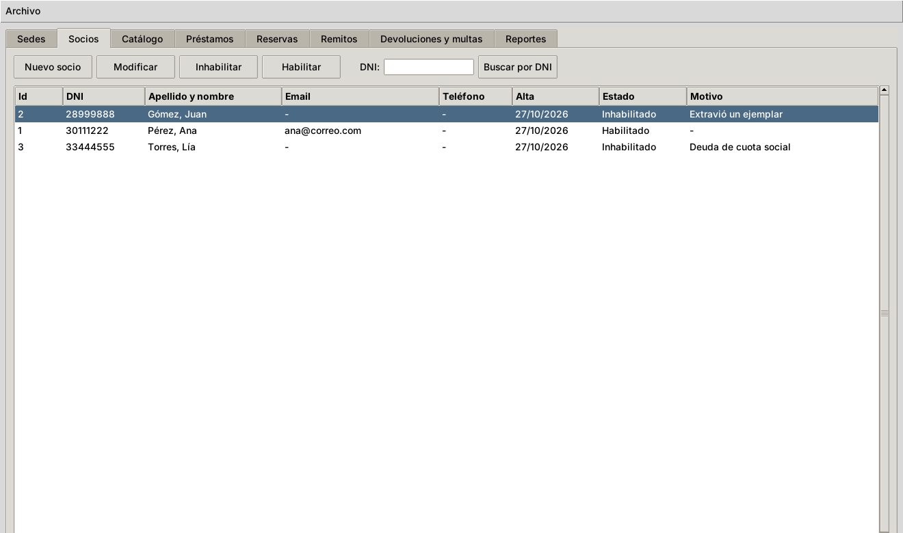
CP-06 · Modificar el email de un socioPasa
| Tipo | Flujo positivo |
| Precondiciones | existe la socia "Pérez, Ana" |
| Pasos | 1. el usuario cambia el email a "ana.perez@correo.com" |
| Resultado esperado | el sistema muestra el mensaje "Socio modificado." la grilla muestra el email nuevo |
| Resultado de la ejecución | Pasa |
| Requisitos | R03 |
| Prueba | e2e/test_e2e_socios.py::test_cp06_modificar_datos_de_contacto_del_socio |
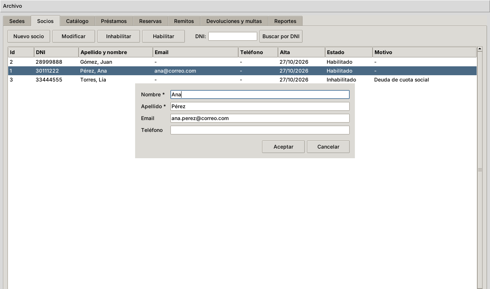
CN-06 · DNI con letrasPasa
| Tipo | Flujo negativo |
| Precondiciones | el usuario abrió la pestaña "Socios" |
| Pasos | 1. el usuario registra un socio con DNI "12ab" |
| Resultado esperado | el sistema muestra el mensaje "Operación rechazada": "El DNI '12ab' no es válido: debe tener 7 u 8 dígitos." |
| Resultado de la ejecución | Pasa |
| Requisitos | R03 |
| Prueba | e2e/test_e2e_socios.py::test_cn06_alta_de_socio_con_dni_invalido |
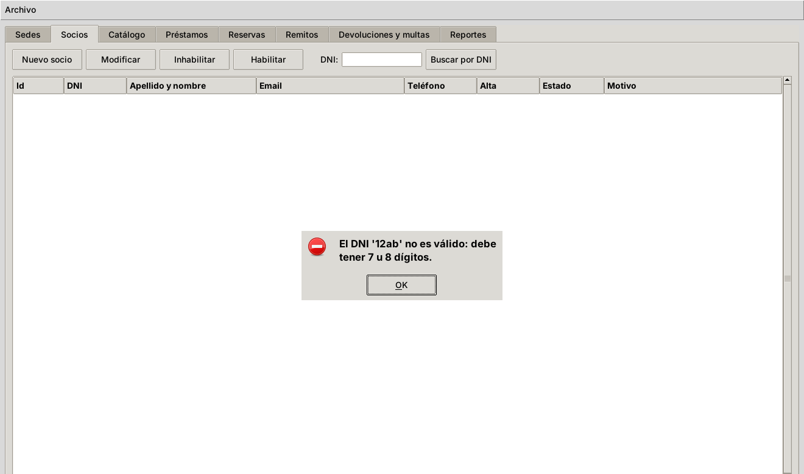
CN-07 · DNI duplicadoPasa
| Tipo | Flujo negativo |
| Precondiciones | existe un socio con DNI "30111222" |
| Pasos | 1. el usuario registra otro socio con DNI "30111222" |
| Resultado esperado | el sistema muestra el mensaje "Operación rechazada": "Ya existe un socio con DNI 30111222." la grilla sigue mostrando 3 socios |
| Resultado de la ejecución | Pasa |
| Requisitos | V05 |
| Prueba | e2e/test_e2e_socios.py::test_cn07_alta_de_socio_con_dni_duplicado |
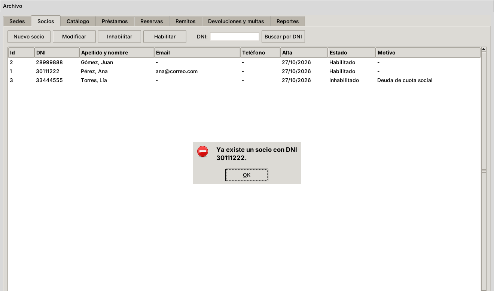
CN-08 · Inhabilitar sin motivoPasa
| Tipo | Flujo negativo |
| Precondiciones | existe la socia "Pérez, Ana" seleccionada |
| Pasos | 1. el usuario hace click en "Inhabilitar" y acepta sin motivo |
| Resultado esperado | el sistema muestra el aviso "Complete el dato 'Motivo'." |
| Resultado de la ejecución | Pasa |
| Requisitos | R03 |
| Prueba | e2e/test_e2e_socios.py::test_cn08_inhabilitar_sin_motivo |
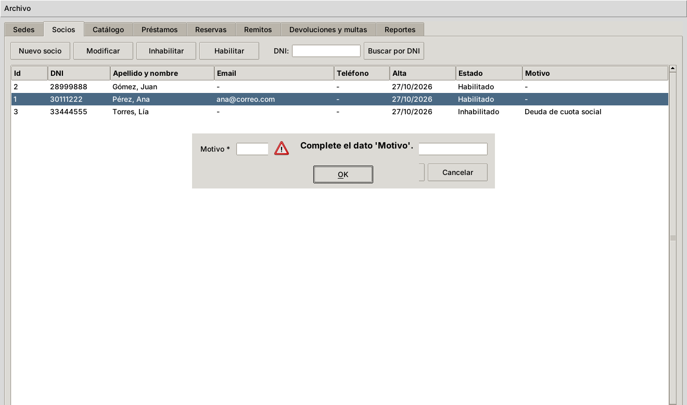
CN-09 · Inhabilitar a un socio ya inhabilitadoPasa
| Tipo | Flujo negativo |
| Precondiciones | la socia "Torres, Lía" está inhabilitada |
| Pasos | 1. el usuario la inhabilita de nuevo |
| Resultado esperado | el sistema muestra el mensaje "Operación rechazada": "El socio Torres, Lía ya está inhabilitado." |
| Resultado de la ejecución | Pasa |
| Requisitos | R03 |
| Prueba | e2e/test_e2e_socios.py::test_cn09_inhabilitar_un_socio_ya_inhabilitado |
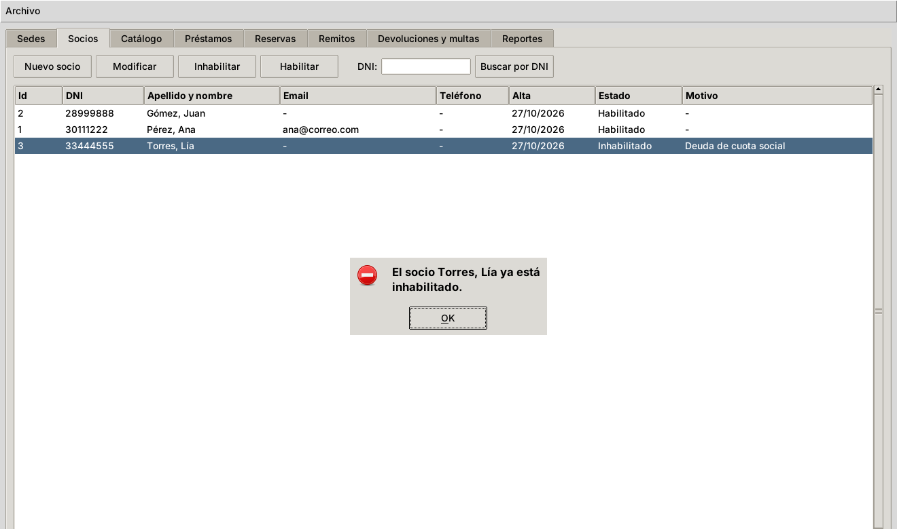
CP-30 · Buscar un socio por DNIPasa
| Tipo | Flujo positivo |
| Precondiciones | existe el socio DNI "28999888" |
| Pasos | 1. el usuario ingresa "28.999.888" en "DNI" y hace click en "Buscar por DNI" |
| Resultado esperado | la grilla selecciona a "Gómez, Juan" |
| Resultado de la ejecución | Pasa |
| Requisitos | R03 |
| Prueba | e2e/test_e2e_socios.py::test_cp30_buscar_un_socio_por_dni |
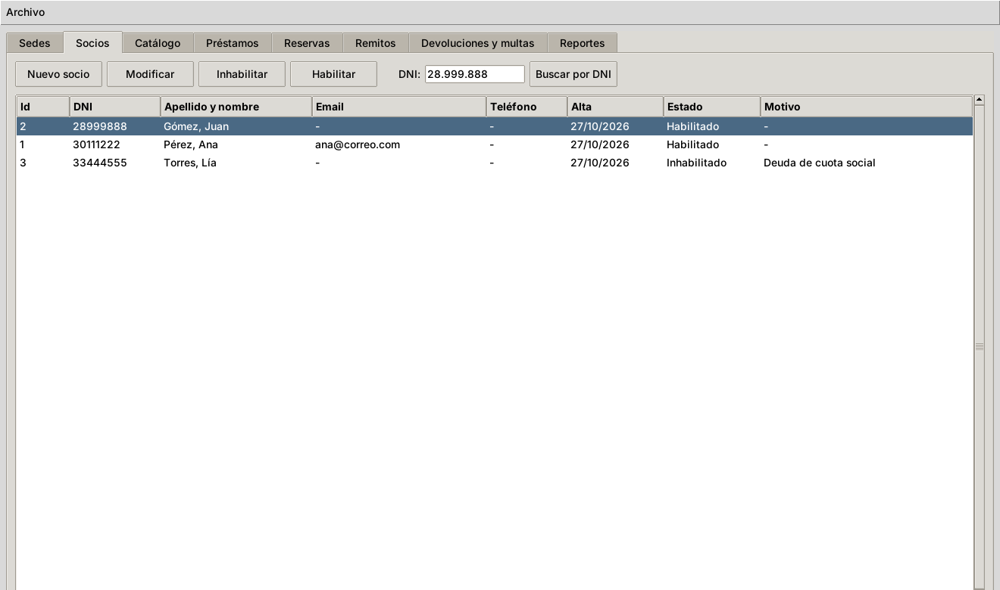
CN-46 · Buscar un DNI que no existePasa
| Tipo | Flujo negativo |
| Precondiciones | no hay socio con DNI "12345678" |
| Pasos | 1. el usuario busca el DNI "12345678" |
| Resultado esperado | el sistema muestra el mensaje "Operación rechazada": "No existe un socio con DNI 12345678." |
| Resultado de la ejecución | Pasa |
| Requisitos | R03 |
| Prueba | e2e/test_e2e_socios.py::test_cn46_buscar_un_dni_que_no_existe |
Catálogo y disponibilidad
CP-07 · Alta de libro y de un ejemplar en una sedePasa
| Tipo | Flujo positivo |
| Precondiciones | existen las sedes de la red |
| Pasos | 1. el usuario registra el libro "Ficciones" con ISBN "978-950-04-3046-3" 2. el usuario selecciona el libro y registra el ejemplar "nor-0100" en "Sede Norte" |
| Resultado esperado | el sistema muestra "Libro registrado." y el ISBN "9789500430463" el sistema muestra "Ejemplar registrado." y el ejemplar "NOR-0100" de "Sede Norte", "Disponible" |
| Resultado de la ejecución | Pasa |
| Requisitos | R04, R05 |
| Prueba | e2e/test_e2e_catalogo.py::test_cp07_alta_de_libro_y_de_ejemplar_en_una_sede |
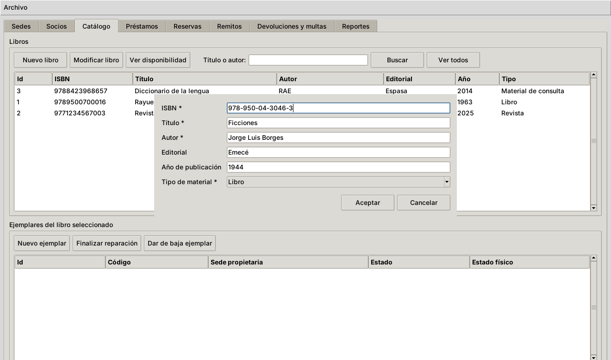
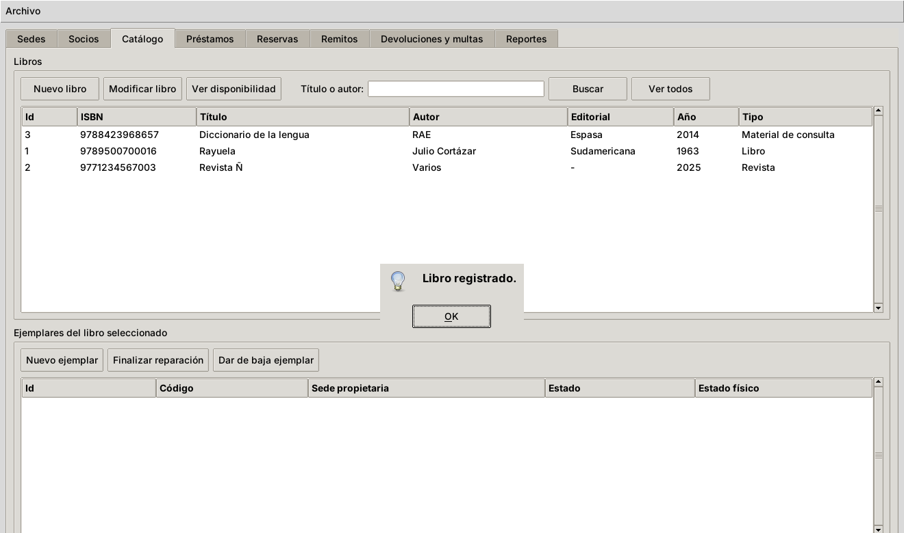
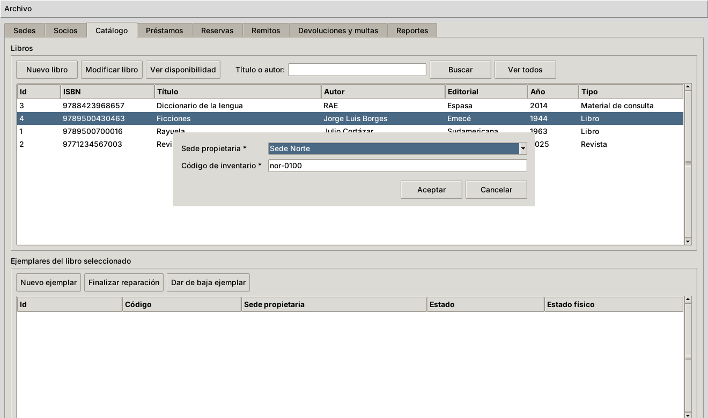
CP-08 · Consultar disponibilidad de un libro por sedePasa
| Tipo | Flujo positivo |
| Precondiciones | Rayuela tiene un ejemplar en cada sede; el de Centro está prestado y el de Sur comprometido en una solicitud |
| Pasos | 1. el usuario selecciona "Rayuela" y hace click en "Ver disponibilidad" |
| Resultado esperado | el sistema muestra la ventana "Disponibilidad de 'Rayuela'" Centro: 1 prestado; Norte: 1 disponible; Sur: 1 prestado |
| Resultado de la ejecución | Pasa |
| Requisitos | R13 |
| Prueba | e2e/test_e2e_catalogo.py::test_cp08_consultar_disponibilidad_por_sede |
CP-09 · Finalizar reparación y dar de baja un ejemplarPasa
| Tipo | Flujo positivo |
| Precondiciones | el ejemplar "CEN-0001" está "En reparación" por una devolución dañada |
| Pasos | 1. el usuario hace click en "Finalizar reparación" 2. el usuario hace click en "Dar de baja ejemplar" y confirma |
| Resultado esperado | el sistema muestra "El ejemplar vuelve a circular." y el ejemplar queda "Disponible" / "Regular" el sistema muestra "Ejemplar dado de baja." y el ejemplar queda "Dado de baja" |
| Resultado de la ejecución | Pasa |
| Requisitos | R05, R16 |
| Prueba | e2e/test_e2e_catalogo.py::test_cp09_finalizar_reparacion_y_dar_de_baja_un_ejemplar |
CN-10 · ISBN inválidoPasa
| Tipo | Flujo negativo |
| Precondiciones | el usuario abrió la pestaña "Catálogo" |
| Pasos | 1. el usuario registra un libro con ISBN "123" |
| Resultado esperado | el sistema muestra el mensaje "Operación rechazada": "El ISBN '123' no es válido: debe tener 10 o 13 dígitos." |
| Resultado de la ejecución | Pasa |
| Requisitos | R04 |
| Prueba | e2e/test_e2e_catalogo.py::test_cn10_libro_con_isbn_invalido |
CN-11 · ISBN duplicado con guionesPasa
| Tipo | Flujo negativo |
| Precondiciones | existe Rayuela con ISBN "9789500700016" |
| Pasos | 1. el usuario registra un libro con ISBN "978-950-07-0001-6" |
| Resultado esperado | el sistema muestra el mensaje "Operación rechazada": "Ya existe un libro con ISBN 9789500700016." |
| Resultado de la ejecución | Pasa |
| Requisitos | V06 |
| Prueba | e2e/test_e2e_catalogo.py::test_cn11_libro_con_isbn_duplicado |
CN-12 · Código de inventario duplicadoPasa
| Tipo | Flujo negativo |
| Precondiciones | existe el ejemplar "CEN-0001" |
| Pasos | 1. el usuario registra un ejemplar con código "cen-0001" |
| Resultado esperado | el sistema muestra el mensaje "Operación rechazada": "Ya existe un ejemplar con código CEN-0001." |
| Resultado de la ejecución | Pasa |
| Requisitos | V07 |
| Prueba | e2e/test_e2e_catalogo.py::test_cn12_ejemplar_con_codigo_de_inventario_duplicado |
CN-13 · Ejemplar en una sede dada de bajaPasa
| Tipo | Flujo negativo |
| Precondiciones | la "Sede Sur" está dada de baja |
| Pasos | 1. el usuario registra un ejemplar en "Sede Sur (dada de baja)" |
| Resultado esperado | el sistema muestra el mensaje "Operación rechazada": "No se pueden incorporar ejemplares a la sede 'Sede Sur' porque está dada de baja." |
| Resultado de la ejecución | Pasa |
| Requisitos | R05, V09 |
| Prueba | e2e/test_e2e_catalogo.py::test_cn13_ejemplar_en_una_sede_dada_de_baja |
CN-14 · Año no numéricoPasa
| Tipo | Flujo negativo |
| Precondiciones | el usuario abrió la pestaña "Catálogo" |
| Pasos | 1. el usuario ingresa "abc" en "Año de publicación" y acepta |
| Resultado esperado | el sistema muestra el aviso "'abc' no es un valor válido para 'Año de publicación'." |
| Resultado de la ejecución | Pasa |
| Requisitos | R04 |
| Prueba | e2e/test_e2e_catalogo.py::test_cn14_anio_de_publicacion_no_numerico |
CN-15 · Año futuroPasa
| Tipo | Flujo negativo |
| Precondiciones | el usuario abrió la pestaña "Catálogo" |
| Pasos | 1. el usuario ingresa el año siguiente en "Año de publicación" |
| Resultado esperado | el sistema muestra el mensaje "Operación rechazada": "El año de publicación <año> no es válido." |
| Resultado de la ejecución | Pasa |
| Requisitos | R04 |
| Prueba | e2e/test_e2e_catalogo.py::test_cn15_anio_de_publicacion_fuera_de_rango |
CN-16 · Baja de un ejemplar prestadoPasa
| Tipo | Flujo negativo |
| Precondiciones | el ejemplar "CEN-0001" está prestado |
| Pasos | 1. el usuario lo da de baja y confirma |
| Resultado esperado | el sistema muestra el mensaje "Operación rechazada": "El ejemplar CEN-0001 está prestado y no se puede dar de baja." |
| Resultado de la ejecución | Pasa |
| Requisitos | R05 |
| Prueba | e2e/test_e2e_catalogo.py::test_cn16_dar_de_baja_un_ejemplar_prestado |
CN-17 · Finalizar reparación de un ejemplar sanoPasa
| Tipo | Flujo negativo |
| Precondiciones | el ejemplar "NOR-0001" está disponible |
| Pasos | 1. el usuario hace click en "Finalizar reparación" |
| Resultado esperado | el sistema muestra el mensaje "Operación rechazada": "El ejemplar NOR-0001 no está en reparación." |
| Resultado de la ejecución | Pasa |
| Requisitos | R05 |
| Prueba | e2e/test_e2e_catalogo.py::test_cn17_finalizar_reparacion_de_un_ejemplar_sano |
CP-31 · Buscar libros por título o autorPasa
| Tipo | Flujo positivo |
| Precondiciones | el catálogo tiene Rayuela, Revista Ñ y el Diccionario de la RAE |
| Pasos | 1. el usuario ingresa "rae" y hace click en "Buscar" 2. el usuario hace click en "Ver todos" |
| Resultado esperado | la grilla muestra solo "Diccionario de la lengua" la grilla vuelve a mostrar los 3 libros |
| Resultado de la ejecución | Pasa |
| Requisitos | R04 |
| Prueba | e2e/test_e2e_catalogo.py::test_cp31_buscar_libros_por_titulo_o_autor |
CN-47 · ISBN con dígito verificador incorrectoPasa
| Tipo | Flujo negativo |
| Precondiciones | el usuario abrió la pestaña "Catálogo" |
| Pasos | 1. el usuario registra un libro con ISBN "978-950-04-3046-7" |
| Resultado esperado | el sistema muestra el mensaje "Operación rechazada": "El ISBN '978-950-04-3046-7' no es válido: el dígito verificador no corresponde." |
| Resultado de la ejecución | Pasa |
| Requisitos | R04, V06 |
| Prueba | e2e/test_e2e_catalogo.py::test_cn47_libro_con_digito_verificador_incorrecto |
Préstamos
CP-10 · Préstamo local a 14 díasPasa
| Tipo | Flujo positivo |
| Precondiciones | la socia "Pérez, Ana" está habilitada y "CEN-0001" está disponible en "Sede Centro" |
| Pasos | 1. el usuario hace click en "Préstamo local" 2. el usuario elige socia, "Sede Centro" y "CEN-0001" y acepta |
| Resultado esperado | el sistema muestra el mensaje "Préstamo registrado. Vence el <hoy+14>." la grilla muestra el préstamo "Local" en estado "Activo" |
| Resultado de la ejecución | Pasa |
| Requisitos | R06, V03 |
| Prueba | e2e/test_e2e_prestamos.py::test_cp10_prestamo_local |
CP-11 · Solicitud interbibliotecaria con remito de idaPasa
| Tipo | Flujo positivo |
| Precondiciones | "NOR-0001" pertenece a "Sede Norte" y está disponible |
| Pasos | 1. el usuario pide "NOR-0001" de "Sede Norte" para retirar en "Sede Centro" |
| Resultado esperado | el sistema muestra el mensaje "Solicitud registrada. Se generó el remito de ida." el préstamo queda "Solicitado" y aparece el remito "R-000001" (Ida, Generado) |
| Resultado de la ejecución | Pasa |
| Requisitos | R07, R11 |
| Prueba | e2e/test_e2e_prestamos.py::test_cp11_solicitud_interbibliotecaria_genera_remito_de_ida |
CP-12 · Cancelar una solicitud no despachadaPasa
| Tipo | Flujo positivo |
| Precondiciones | existe una solicitud interbibliotecaria de "NOR-0001" sin despachar |
| Pasos | 1. el usuario selecciona la solicitud, hace click en "Cancelar solicitud" y confirma |
| Resultado esperado | el sistema muestra "Solicitud cancelada." el préstamo queda "Cancelado", el remito "Anulado" y el ejemplar "Disponible" |
| Resultado de la ejecución | Pasa |
| Requisitos | R07 |
| Prueba | e2e/test_e2e_prestamos.py::test_cp12_cancelar_solicitud_interbibliotecaria |
CN-18 · Préstamo a socio inhabilitadoPasa
| Tipo | Flujo negativo |
| Precondiciones | la socia "Torres, Lía" está inhabilitada por "Deuda de cuota social" |
| Pasos | 1. el usuario registra un préstamo local para "Torres, Lía" |
| Resultado esperado | el sistema muestra el mensaje "Operación rechazada": "El socio Torres, Lía está inhabilitado (Deuda de cuota social)." |
| Resultado de la ejecución | Pasa |
| Requisitos | V02 |
| Prueba | e2e/test_e2e_prestamos.py::test_cn18_prestamo_a_socio_inhabilitado |
CN-19 · Prestar un ejemplar ya prestadoPasa
| Tipo | Flujo negativo |
| Precondiciones | "CEN-0001" está prestado a "Gómez, Juan" |
| Pasos | 1. el usuario presta "CEN-0001" a "Pérez, Ana" |
| Resultado esperado | el sistema muestra el mensaje "Operación rechazada": "El ejemplar CEN-0001 no está disponible (prestado)." |
| Resultado de la ejecución | Pasa |
| Requisitos | V01 |
| Prueba | e2e/test_e2e_prestamos.py::test_cn19_prestamo_de_ejemplar_no_disponible |
CN-44 · Prestar un ejemplar en reparaciónPasa
| Tipo | Flujo negativo |
| Precondiciones | "CEN-0001" está en reparación |
| Pasos | 1. el usuario presta "CEN-0001" a "Pérez, Ana" |
| Resultado esperado | el sistema muestra el mensaje "Operación rechazada": "El ejemplar CEN-0001 no está disponible (en reparación)." |
| Resultado de la ejecución | Pasa |
| Requisitos | V01 |
| Prueba | e2e/test_e2e_prestamos.py::test_cn44_prestamo_de_ejemplar_en_reparacion |
CN-20 · Solo se ofrecen ejemplares de la sede de origenPasa
| Tipo | Flujo negativo |
| Precondiciones | la "Sede Sur" tiene los ejemplares "SUR-0001" y "SUR-0002" |
| Pasos | 1. el usuario abre "Préstamo interbibliotecario" y elige "Sede Sur" como origen |
| Resultado esperado | la lista "Ejemplar de la sede de origen" muestra solo "SUR-0001" y "SUR-0002" |
| Resultado de la ejecución | Pasa |
| Requisitos | V08 |
| Prueba | e2e/test_e2e_prestamos.py::test_cn20_la_lista_solo_ofrece_ejemplares_de_la_sede_de_origen |
CN-21 · Préstamo desde una sede dada de bajaPasa
| Tipo | Flujo negativo |
| Precondiciones | la "Sede Norte" está dada de baja |
| Pasos | 1. el usuario pide "NOR-0001" con origen "Sede Norte (dada de baja)" |
| Resultado esperado | el sistema muestra el mensaje "Operación rechazada": "La sede de origen 'Sede Norte' está dada de baja." |
| Resultado de la ejecución | Pasa |
| Requisitos | V09 |
| Prueba | e2e/test_e2e_prestamos.py::test_cn21_prestamo_desde_una_sede_dada_de_baja |
CN-22 · Socio con préstamos vencidosPasa
| Tipo | Flujo negativo |
| Precondiciones | "Gómez, Juan" tiene un préstamo vencido hace 6 días |
| Pasos | 1. el usuario le registra un nuevo préstamo |
| Resultado esperado | el sistema muestra el mensaje "Operación rechazada": "El socio Gómez, Juan tiene préstamos vencidos sin devolver." |
| Resultado de la ejecución | Pasa |
| Requisitos | V03 |
| Prueba | e2e/test_e2e_prestamos.py::test_cn22_prestamo_a_socio_con_prestamos_vencidos |
CN-23 · Socio con multas impagasPasa
| Tipo | Flujo negativo |
| Precondiciones | "Gómez, Juan" devolvió con atraso y no pagó la multa |
| Pasos | 1. el usuario le registra un nuevo préstamo |
| Resultado esperado | el sistema muestra el mensaje "Operación rechazada": "El socio Gómez, Juan tiene multas sin pagar." |
| Resultado de la ejecución | Pasa |
| Requisitos | V03 |
| Prueba | e2e/test_e2e_prestamos.py::test_cn23_prestamo_a_socio_con_multas_impagas |
CN-24 · Misma sede de origen y destinoPasa
| Tipo | Flujo negativo |
| Precondiciones | el usuario abrió la pestaña "Préstamos" |
| Pasos | 1. el usuario pide un interbibliotecario de "Sede Centro" a "Sede Centro" |
| Resultado esperado | el sistema muestra el mensaje "Operación rechazada": "En un préstamo interbibliotecario la sede de origen y la de destino deben ser distintas." |
| Resultado de la ejecución | Pasa |
| Requisitos | R07 |
| Prueba | e2e/test_e2e_prestamos.py::test_cn24_interbibliotecario_con_la_misma_sede_de_origen_y_destino |
CN-25 · Entregar un préstamo que no llegóPasa
| Tipo | Flujo negativo |
| Precondiciones | existe una solicitud interbibliotecaria sin despachar |
| Pasos | 1. el usuario hace click en "Entregar al socio" |
| Resultado esperado | el sistema muestra el mensaje "Operación rechazada": "El préstamo está solicitado: solo se entregan préstamos listos para retiro." |
| Resultado de la ejecución | Pasa |
| Requisitos | R07, R12 |
| Prueba | e2e/test_e2e_prestamos.py::test_cn25_entregar_un_prestamo_que_no_llego |
CN-26 · Cancelar una solicitud ya despachadaPasa
| Tipo | Flujo negativo |
| Precondiciones | el remito de la solicitud ya fue despachado |
| Pasos | 1. el usuario hace click en "Cancelar solicitud" y confirma |
| Resultado esperado | el sistema muestra el mensaje "Operación rechazada": "El préstamo está en envío: solo se cancelan solicitudes no despachadas." |
| Resultado de la ejecución | Pasa |
| Requisitos | R07, R12 |
| Prueba | e2e/test_e2e_prestamos.py::test_cn26_cancelar_una_solicitud_ya_despachada |
Remitos
CP-13 · Empaquetar, despachar, punto de control, recibir y entregar con trazabilidadPasa
| Tipo | Flujo positivo |
| Precondiciones | existe el remito "R-000001" (Ida, Norte → Centro) en estado "Generado" |
| Pasos | 1. el usuario hace click en "Empaquetar", "Despachar", "Punto de control" y "Recibir" con estado "Bueno" 2. el usuario entrega el préstamo al socio en la pestaña "Préstamos" |
| Resultado esperado | el sistema informa cada estado: "Empaquetado", "Despachado", "En tránsito", "Recibido" el remito queda "Cerrado" y el trayecto muestra los 6 movimientos en orden |
| Resultado de la ejecución | Pasa |
| Requisitos | R08, R09, R10, R12, V04, P03 |
| Prueba | e2e/test_e2e_remitos.py::test_cp13_ciclo_completo_del_remito_de_ida_con_trazabilidad |
CP-14 · Recepción con daño genera el remito de retornoPasa
| Tipo | Flujo positivo |
| Precondiciones | el remito "R-000001" está despachado |
| Pasos | 1. el usuario recibe el remito con estado físico "Dañado" |
| Resultado esperado | el sistema muestra "Remito recibido. Estado actual: Cerrado." el trayecto muestra Recibido → Dañado → Cerrado aparece "R-000002" (Retorno, Centro → Norte, Generado) |
| Resultado de la ejecución | Pasa |
| Requisitos | R10, R12, R16 |
| Prueba | e2e/test_e2e_remitos.py::test_cp14_recepcion_con_danio_genera_remito_de_retorno |
CP-15 · Registrar daño antes de entregar al socioPasa
| Tipo | Flujo positivo |
| Precondiciones | el remito "R-000001" está "Recibido" |
| Pasos | 1. el usuario hace click en "Registrar daño" con una descripción |
| Resultado esperado | el sistema muestra "Daño registrado; se generó el remito de retorno. Estado actual: Cerrado." |
| Resultado de la ejecución | Pasa |
| Requisitos | R12, R16 |
| Prueba | e2e/test_e2e_remitos.py::test_cp15_registrar_danio_despues_de_recibir |
CP-16 · Reportar extravíoPasa
| Tipo | Flujo positivo |
| Precondiciones | el remito "R-000001" está despachado |
| Pasos | 1. el usuario hace click en "Reportar extravío" con una observación |
| Resultado esperado | el sistema muestra "Extravío registrado. Estado actual: Cerrado." el ejemplar "NOR-0001" queda "Extraviado" |
| Resultado de la ejecución | Pasa |
| Requisitos | R12 |
| Prueba | e2e/test_e2e_remitos.py::test_cp16_reportar_extravio |
CP-17 · Anular un remito de ida no despachadoPasa
| Tipo | Flujo positivo |
| Precondiciones | el remito "R-000001" está "Generado" |
| Pasos | 1. el usuario hace click en "Anular" con el motivo "El socio desistió" |
| Resultado esperado | el sistema muestra "Remito anulado y préstamo cancelado. Estado actual: Anulado." el ejemplar "NOR-0001" vuelve a "Disponible" |
| Resultado de la ejecución | Pasa |
| Requisitos | R12 |
| Prueba | e2e/test_e2e_remitos.py::test_cp17_anular_remito_de_ida_antes_del_despacho |
CP-18 · Devolución interbibliotecaria y remito de retornoPasa
| Tipo | Flujo positivo |
| Precondiciones | "Pérez, Ana" tiene un préstamo interbibliotecario activo de "NOR-0001" |
| Pasos | 1. el usuario registra la devolución en estado "Bueno" 2. el usuario empaqueta, despacha y recibe el remito "R-000002" |
| Resultado esperado | el sistema muestra "Devolución registrada.\nSe generó el remito de retorno a la sede propietaria." "R-000002" queda "Cerrado" con la observación "Ejemplar reintegrado a su sede" "NOR-0001" queda "Disponible" |
| Resultado de la ejecución | Pasa |
| Requisitos | R15, R12, V04 |
| Prueba | e2e/test_e2e_remitos.py::test_cp18_remito_de_retorno_reintegra_el_ejemplar_a_su_sede |
CN-27 · Recibir un remito que no salióPasa
| Tipo | Flujo negativo |
| Precondiciones | el remito "R-000001" está "Generado" |
| Pasos | 1. el usuario hace click en "Recibir" |
| Resultado esperado | el sistema muestra el mensaje "Operación rechazada": "No se puede recibir un remito en estado Generado." el remito sigue "Generado" con 1 movimiento |
| Resultado de la ejecución | Pasa |
| Requisitos | R12, P03 |
| Prueba | e2e/test_e2e_remitos.py::test_cn27_recibir_un_remito_que_no_salio |
CN-28 · Anular un remito despachadoPasa
| Tipo | Flujo negativo |
| Precondiciones | el remito "R-000001" está "Despachado" |
| Pasos | 1. el usuario hace click en "Anular" |
| Resultado esperado | el sistema muestra el mensaje "Operación rechazada": "No se puede anular un remito en estado Despachado." |
| Resultado de la ejecución | Pasa |
| Requisitos | R12, P03 |
| Prueba | e2e/test_e2e_remitos.py::test_cn28_anular_un_remito_ya_despachado |
CN-29 · Despachar hacia una sede dada de bajaPasa
| Tipo | Flujo negativo |
| Precondiciones | el remito está "Empaquetado" y la "Sede Centro" (destino) se dio de baja |
| Pasos | 1. el usuario hace click en "Despachar" |
| Resultado esperado | el sistema muestra el mensaje "Operación rechazada": "No se puede despachar: la sede de destino 'Sede Centro' está dada de baja." el remito sigue "Empaquetado" |
| Resultado de la ejecución | Pasa |
| Requisitos | V11 |
| Prueba | e2e/test_e2e_remitos.py::test_cn29_despachar_hacia_una_sede_dada_de_baja |
CN-30 · Anular un remito de retornoPasa
| Tipo | Flujo negativo |
| Precondiciones | existe el remito de retorno "R-000002" |
| Pasos | 1. el usuario hace click en "Anular" |
| Resultado esperado | el sistema muestra el mensaje "Operación rechazada": "Un remito de retorno no se puede anular: el ejemplar debe volver a su sede." |
| Resultado de la ejecución | Pasa |
| Requisitos | R12, P03 |
| Prueba | e2e/test_e2e_remitos.py::test_cn30_anular_un_remito_de_retorno |
CN-31 · Punto de control sin ubicaciónPasa
| Tipo | Flujo negativo |
| Precondiciones | el remito está despachado |
| Pasos | 1. el usuario hace click en "Punto de control" y acepta sin ubicación |
| Resultado esperado | el sistema muestra el aviso "Complete el dato 'Ubicación'." |
| Resultado de la ejecución | Pasa |
| Requisitos | R12 |
| Prueba | e2e/test_e2e_remitos.py::test_cn31_punto_de_control_sin_ubicacion |
CN-32 · Acción sin remito seleccionadoPasa
| Tipo | Flujo negativo |
| Precondiciones | no hay remito seleccionado |
| Pasos | 1. el usuario hace click en "Empaquetar" |
| Resultado esperado | el sistema muestra el aviso "Seleccione un remito en la lista." |
| Resultado de la ejecución | Pasa |
| Requisitos | R12 |
| Prueba | e2e/test_e2e_remitos.py::test_cn32_accion_sin_remito_seleccionado |
Reservas
CP-19 · Reservar, asignar al devolverse y retirarPasa
| Tipo | Flujo positivo |
| Precondiciones | el único Rayuela de "Sede Centro" ("CEN-0001") lo tiene "Gómez, Juan" |
| Pasos | 1. "Pérez, Ana" reserva "Rayuela" en "Sede Centro" 2. Juan devuelve el ejemplar 3. el usuario presta "CEN-0001" a Ana |
| Resultado esperado | el sistema muestra "Reserva registrada. Los ejemplares se asignan por orden de llegada." la reserva pasa a "Disponible para retiro" con "CEN-0001" hasta <hoy+3> la reserva queda "Cumplida" |
| Resultado de la ejecución | Pasa |
| Requisitos | R14, R15 |
| Prueba | e2e/test_e2e_reservas.py::test_cp19_reserva_asignacion_por_devolucion_y_retiro_del_titular |
CP-20 · Cancelar una reservaPasa
| Tipo | Flujo positivo |
| Precondiciones | "Pérez, Ana" tiene una reserva pendiente |
| Pasos | 1. el usuario la selecciona y hace click en "Cancelar reserva" |
| Resultado esperado | el sistema muestra "Reserva cancelada." la lista de reservas activas queda vacía |
| Resultado de la ejecución | Pasa |
| Requisitos | R14 |
| Prueba | e2e/test_e2e_reservas.py::test_cp20_cancelar_reserva |
CP-21 · Vencer reservas no retiradasPasa
| Tipo | Flujo positivo |
| Precondiciones | una reserva tiene el ejemplar apartado y el plazo de retiro venció |
| Pasos | 1. el usuario hace click en "Procesar reservas no retiradas" |
| Resultado esperado | el sistema muestra "Reservas vencidas por no retirar: 1." la reserva queda "Vencida" |
| Resultado de la ejecución | Pasa |
| Requisitos | R14 |
| Prueba | e2e/test_e2e_reservas.py::test_cp21_procesar_reservas_no_retiradas |
CN-33 · Reservar con ejemplares disponiblesPasa
| Tipo | Flujo negativo |
| Precondiciones | "CEN-0001" está disponible |
| Pasos | 1. "Pérez, Ana" reserva "Rayuela" en "Sede Centro" |
| Resultado esperado | el sistema muestra el mensaje "Operación rechazada": "Hay ejemplares de 'Rayuela' disponibles en 'Sede Centro'. Solicite el préstamo." |
| Resultado de la ejecución | Pasa |
| Requisitos | R14 |
| Prueba | e2e/test_e2e_reservas.py::test_cn33_reservar_cuando_hay_ejemplares_disponibles |
CN-34 · Reservar en una sede sin ejemplaresPasa
| Tipo | Flujo negativo |
| Precondiciones | "Sede Norte" no tiene el Diccionario |
| Pasos | 1. "Pérez, Ana" reserva el Diccionario en "Sede Norte" |
| Resultado esperado | el sistema muestra el mensaje "Operación rechazada": "La sede 'Sede Norte' no tiene ejemplares de 'Diccionario de la lengua'. Solicite un préstamo interbibliotecario." |
| Resultado de la ejecución | Pasa |
| Requisitos | R14 |
| Prueba | e2e/test_e2e_reservas.py::test_cn34_reservar_en_una_sede_sin_ejemplares_del_libro |
CN-35 · Reserva duplicadaPasa
| Tipo | Flujo negativo |
| Precondiciones | Ana ya reservó Rayuela |
| Pasos | 1. Ana reserva Rayuela otra vez |
| Resultado esperado | el sistema muestra el mensaje "Operación rechazada": "El socio ya tiene una reserva activa de 'Rayuela'." |
| Resultado de la ejecución | Pasa |
| Requisitos | R14 |
| Prueba | e2e/test_e2e_reservas.py::test_cn35_reserva_duplicada |
CN-36 · Reserva de socio inhabilitadoPasa
| Tipo | Flujo negativo |
| Precondiciones | "Torres, Lía" está inhabilitada |
| Pasos | 1. Lía reserva Rayuela |
| Resultado esperado | el sistema muestra el mensaje "Operación rechazada": "El socio Torres, Lía está inhabilitado (Deuda de cuota social)." |
| Resultado de la ejecución | Pasa |
| Requisitos | R14, V02 |
| Prueba | e2e/test_e2e_reservas.py::test_cn36_reserva_de_socio_inhabilitado |
CN-37 · Reserva en sede dada de bajaPasa
| Tipo | Flujo negativo |
| Precondiciones | "Sede Norte" está dada de baja |
| Pasos | 1. Ana reserva Rayuela en "Sede Norte" |
| Resultado esperado | el sistema muestra el mensaje "Operación rechazada": "La sede de retiro 'Sede Norte' está dada de baja." |
| Resultado de la ejecución | Pasa |
| Requisitos | V10 |
| Prueba | e2e/test_e2e_reservas.py::test_cn37_reserva_en_sede_dada_de_baja |
CN-38 · Prestar a otro socio un ejemplar apartadoPasa
| Tipo | Flujo negativo |
| Precondiciones | "CEN-0001" está apartado para la reserva de Ana |
| Pasos | 1. el usuario presta "CEN-0001" a "Gómez, Juan" |
| Resultado esperado | el sistema muestra el mensaje "Operación rechazada": "El ejemplar CEN-0001 está apartado para la reserva de otro socio." |
| Resultado de la ejecución | Pasa |
| Requisitos | R14, V01 |
| Prueba | e2e/test_e2e_reservas.py::test_cn38_prestar_un_ejemplar_apartado_para_otro_socio |
Devoluciones y multas
CP-22 · Devolución en términoPasa
| Tipo | Flujo positivo |
| Precondiciones | Ana tiene un préstamo local de hoy |
| Pasos | 1. el usuario registra la devolución en estado "Bueno" |
| Resultado esperado | el sistema muestra "Devolución registrada." la grilla muestra 0 días, "$0.00" y pagada "Sí" |
| Resultado de la ejecución | Pasa |
| Requisitos | R15, R16 |
| Prueba | e2e/test_e2e_devoluciones.py::test_cp22_devolucion_en_termino_sin_multa |


CP-23 · Multa por atraso según material y pagoPasa
| Tipo | Flujo positivo |
| Precondiciones | Ana devuelve el Diccionario (consulta) con 3 días de atraso |
| Pasos | 1. el usuario registra la devolución 2. el usuario filtra "Solo multas impagas" y hace click en "Registrar pago de multa" |
| Resultado esperado | el sistema muestra "Devolución registrada.\n3 días de atraso: multa de $3,000.00.\nTotal a pagar: $3,000.00." el sistema muestra "Pago registrado." y no quedan multas impagas |
| Resultado de la ejecución | Pasa |
| Requisitos | R15, V03, P01 |
| Prueba | e2e/test_e2e_devoluciones.py::test_cp23_devolucion_con_atraso_multa_por_tipo_de_material_y_pago |


CP-24 · Devolución dañada con cargoPasa
| Tipo | Flujo positivo |
| Precondiciones | Ana tiene un préstamo local en término |
| Pasos | 1. el usuario registra la devolución en estado "Dañado" |
| Resultado esperado | el sistema muestra "Devolución registrada.\nMaterial devuelto dañado: cargo de $1,000.00.\nTotal a pagar: $1,000.00." el ejemplar queda "En reparación" / "Dañado" |
| Resultado de la ejecución | Pasa |
| Requisitos | R16 |
| Prueba | e2e/test_e2e_devoluciones.py::test_cp24_devolucion_daniada_cobra_cargo_y_envia_a_reparacion |


CP-25 · Cambiar la política de multas en ejecución (Strategy)Pasa
| Tipo | Flujo positivo |
| Precondiciones | dos préstamos con 3 días de atraso |
| Pasos | 1. el usuario elige "Por días de atraso ($500 por día)" y registra una devolución 2. el usuario elige "Sin multa (condonación)" y registra la otra |
| Resultado esperado | el sistema informa "Política de multas: Por días de atraso ($500 por día)." y la multa es "$1,500.00" con la condonación muestra solo "Devolución registrada." |
| Resultado de la ejecución | Pasa |
| Requisitos | P01 |
| Prueba | e2e/test_e2e_devoluciones.py::test_cp25_cambiar_la_politica_de_multas_strategy |


CN-39 · Pagar una devolución sin multaPasa
| Tipo | Flujo negativo |
| Precondiciones | existe una devolución sin multa |
| Pasos | 1. el usuario hace click en "Registrar pago de multa" |
| Resultado esperado | el sistema muestra el mensaje "Operación rechazada": "Esa devolución no tiene una multa pendiente de pago." |
| Resultado de la ejecución | Pasa |
| Requisitos | R15 |
| Prueba | e2e/test_e2e_devoluciones.py::test_cn39_pagar_una_multa_que_no_esta_pendiente |

CN-40 · Devolución sin préstamos activosPasa
| Tipo | Flujo negativo |
| Precondiciones | no hay préstamos activos |
| Pasos | 1. el usuario hace click en "Registrar devolución" y acepta sin préstamo |
| Resultado esperado | el sistema muestra el aviso "Complete el dato 'Préstamo'." |
| Resultado de la ejecución | Pasa |
| Requisitos | R15 |
| Prueba | e2e/test_e2e_devoluciones.py::test_cn40_registrar_devolucion_sin_prestamos_activos |


CP-32 · La política de multas se mantiene al reiniciarPasa
| Tipo | Flujo positivo |
| Precondiciones | la política vigente es la de por defecto |
| Pasos | 1. el usuario elige "Sin multa (condonación)" 2. el usuario cierra y vuelve a abrir el programa |
| Resultado esperado | la pestaña "Devoluciones y multas" muestra "Sin multa (condonación)" como política vigente |
| Resultado de la ejecución | Pasa |
| Requisitos | P01, R15 |
| Prueba | e2e/test_e2e_devoluciones.py::test_cp32_la_politica_de_multas_se_mantiene_al_reiniciar |

Reportes y general
CP-26 · Cargar datos de ejemploPasa
| Tipo | Flujo positivo |
| Precondiciones | la base está vacía |
| Pasos | 1. el usuario elige "Archivo" > "Cargar datos de ejemplo" |
| Resultado esperado | el sistema muestra "Se cargaron los datos de ejemplo." hay 3 sedes y 4 remitos |
| Resultado de la ejecución | Pasa |
| Requisitos | P04 |
| Prueba | e2e/test_e2e_reportes_y_general.py::test_cp26_cargar_datos_de_ejemplo_desde_el_menu |

CP-27 · Ver y exportar los cinco reportes a PDF y CSVPasa
| Tipo | Flujo positivo |
| Precondiciones | se cargaron los datos de ejemplo |
| Pasos | 1. el usuario abre cada reporte y hace click en los dos botones de exportación |
| Resultado esperado | el sistema muestra "Reporte exportado en: <ruta>" se generan 10 archivos no vacíos "reporte_<clave>_<fecha>" |
| Resultado de la ejecución | Pasa |
| Requisitos | P02 |
| Prueba | e2e/test_e2e_reportes_y_general.py::test_cp27_ver_y_exportar_los_cinco_reportes |


CP-28 · Filtrar por rango de fechasPasa
| Tipo | Flujo positivo |
| Precondiciones | se cargaron los datos de ejemplo |
| Pasos | 1. el usuario ingresa 01/01/2000 a 31/12/2000 y abre "4. Movimiento entre sedes" |
| Resultado esperado | el sistema muestra "Tiempo promedio de tránsito en la red: -" |
| Resultado de la ejecución | Pasa |
| Requisitos | P02 |
| Prueba | e2e/test_e2e_reportes_y_general.py::test_cp28_filtrar_reportes_por_rango_de_fechas |

CN-41 · Fecha inválida en el filtroPasa
| Tipo | Flujo negativo |
| Precondiciones | el usuario abrió "Reportes" |
| Pasos | 1. el usuario ingresa "32/13/2026" en "Desde" y abre "3. Libros más solicitados" |
| Resultado esperado | el sistema muestra el aviso "'32/13/2026' no es una fecha válida (dd/mm/aaaa)." |
| Resultado de la ejecución | Pasa |
| Requisitos | P02 |
| Prueba | e2e/test_e2e_reportes_y_general.py::test_cn41_fecha_invalida_en_el_filtro_de_reportes |

CN-42 · Cargar datos de ejemplo dos vecesPasa
| Tipo | Flujo negativo |
| Precondiciones | ya se cargaron los datos de ejemplo |
| Pasos | 1. el usuario elige "Archivo" > "Cargar datos de ejemplo" |
| Resultado esperado | el sistema muestra el aviso "La base ya tiene datos; no se cargó nada." |
| Resultado de la ejecución | Pasa |
| Requisitos | P04 |
| Prueba | e2e/test_e2e_reportes_y_general.py::test_cn42_cargar_datos_de_ejemplo_dos_veces |

CP-29 · Interfaz de consola: cargar datos y listar sedesPasa
| Tipo | Flujo positivo |
| Precondiciones | se ejecuta "python main.py" sobre una base vacía |
| Pasos | 1. el usuario elige 10 (datos de ejemplo), 1 > 1 (listar sedes) y 0 para salir |
| Resultado esperado | la salida muestra "Se cargaron los datos de ejemplo.", la tabla "Sedes de la red" y "¡Hasta luego!" |
| Resultado de la ejecución | Pasa |
| Requisitos | R01, P04 |
| Prueba | e2e/test_e2e_reportes_y_general.py::test_cp29_consola_carga_datos_y_lista_sedes |
Salida real de consola: capturas/CP-29_salida_consola.txt.
CN-43 · Consola: opción inválida y DNI inválidoPasa
| Tipo | Flujo negativo |
| Precondiciones | se ejecuta "python main.py" |
| Pasos | 1. el usuario elige 99 y después registra un socio con DNI "12ab" |
| Resultado esperado | la salida muestra "Opción inválida." y "El DNI '12ab' no es válido: debe tener 7 u 8 dígitos." el programa termina normalmente con "¡Hasta luego!" |
| Resultado de la ejecución | Pasa |
| Requisitos | R03 |
| Prueba | e2e/test_e2e_reportes_y_general.py::test_cn43_consola_opcion_invalida_y_error_de_negocio |
Salida real de consola: capturas/CN-43_salida_consola.txt.
8. Plan y resultados de las pruebas E2E
Enfoque
- La aplicación es de escritorio (Tkinter), no web, así que Playwright no aplica a la GUI. Se construyó un driver (
e2e/driver.py) que maneja la aplicación real: hace clic en los botones, completa los formularios modales, lee el texto de los cuadros de mensaje de Tk y los responde. No reemplaza ninguna función de la app (los tests detests/test_interfaz_grafica.pysí simulan los diálogos). - Cada prueba usa una base SQLite nueva en un archivo temporal; las precondiciones se cargan con los servicios del sistema y los datos son fijos (fechas relativas a hoy), por lo que es reproducible.
- La consola se prueba ejecutando
python main.pycomo proceso con entradas por stdin. - Casos en Gherkin con ID:
e2e/features/*.feature(en español) y la planilladocs/pruebas/casos_xray.csv(Summary | Description | Repositorio | Tipo de test | Gherkin) para Jira/Xray.
Resultados
| Suite | Resultado | Detalle |
|---|---|---|
E2E (e2e/) | 79 pasan · 0 falla esperada · 0 fallan | CN-45 documentaba el defecto D2 como falla esperada; desde su corrección pasa. Log: docs/pruebas/resultados_e2e.txt, JUnit: resultados_e2e.xml. |
Unitarios (tests/) | 241 passed in 23.20s | El test del defecto D1 solo falla si se ejecuta antes de las 10:00 (depende de la hora del reloj). Log: docs/pruebas/resultados_unitarios.txt. |
| Cobertura unitaria | 97 % de biblioteca sin las interfaces | Medido con coverage 7 (el README declaraba 96 %; se actualizó). |
| Funcionalidad | CP | CN | Pasan | Falla esperada | Fallan | Feature |
|---|---|---|---|---|---|---|
| Sedes | 3 | 6 | 9 | 0 | 0 | e2e/features/sedes.feature |
| Socios | 4 | 5 | 9 | 0 | 0 | e2e/features/socios.feature |
| Catálogo y disponibilidad | 4 | 9 | 13 | 0 | 0 | e2e/features/catalogo_y_disponibilidad.feature |
| Préstamos | 3 | 10 | 13 | 0 | 0 | e2e/features/prestamos.feature |
| Remitos | 6 | 6 | 12 | 0 | 0 | e2e/features/remitos.feature |
| Reservas | 3 | 6 | 9 | 0 | 0 | e2e/features/reservas.feature |
| Devoluciones y multas | 5 | 2 | 7 | 0 | 0 | e2e/features/devoluciones_y_multas.feature |
| Reportes y general | 4 | 3 | 7 | 0 | 0 | e2e/features/reportes_y_general.feature |
Casos y resultado
| ID | Summary (Xray) | Resultado | Tiempo |
|---|---|---|---|
| CP-01 | G054 | Sedes | Alta | CP | Alta de sede con todos sus datos | Pasa | 0.82 s |
| CP-02 | G054 | Sedes | Modificación | CP | Modificar teléfono y horario de una sede | Pasa | 0.57 s |
| CP-03 | G054 | Sedes | Baja lógica | CP | Dar de baja y reactivar una sede | Pasa | 0.64 s |
| CN-01 | G054 | Sedes | Alta | CN | Alta sin el nombre obligatorio | Pasa | 0.39 s |
| CN-02 | G054 | Sedes | Alta | CN | Sede con nombre repetido (sin distinguir mayúsculas) | Pasa | 0.56 s |
| CN-03 | G054 | Sedes | Alta | CN | Email con formato inválido | Pasa | 0.37 s |
| CN-04 | G054 | Sedes | Baja lógica | CN | Dar de baja una sede ya dada de baja | Pasa | 0.46 s |
| CN-05 | G054 | Sedes | Modificación | CN | Modificar sin seleccionar una fila | Pasa | 0.57 s |
| CN-45 | G054 | Sedes | Modificación | CN | Vaciar un dato opcional al modificar lo borra | Pasa | 0.82 s |
| CP-04 | G054 | Socios | Alta | CP | Alta de socio con DNI con puntos | Pasa | 0.69 s |
| CP-05 | G054 | Socios | Inhabilitación | CP | Inhabilitar con motivo y volver a habilitar | Pasa | 0.69 s |
| CP-06 | G054 | Socios | Modificación | CP | Modificar el email de un socio | Pasa | 0.49 s |
| CN-06 | G054 | Socios | Alta | CN | DNI con letras | Pasa | 0.39 s |
| CN-07 | G054 | Socios | Alta | CN | DNI duplicado | Pasa | 0.50 s |
| CN-08 | G054 | Socios | Inhabilitación | CN | Inhabilitar sin motivo | Pasa | 0.55 s |
| CN-09 | G054 | Socios | Inhabilitación | CN | Inhabilitar a un socio ya inhabilitado | Pasa | 0.48 s |
| CP-30 | G054 | Socios | Búsqueda | CP | Buscar un socio por DNI | Pasa | 0.37 s |
| CN-46 | G054 | Socios | Búsqueda | CN | Buscar un DNI que no existe | Pasa | 0.43 s |
| CP-07 | G054 | Catálogo y disponibilidad | Libros y ejemplares | CP | Alta de libro y de un ejemplar en una sede | Pasa | 1.77 s |
| CP-08 | G054 | Catálogo y disponibilidad | Disponibilidad | CP | Consultar disponibilidad de un libro por sede | Pasa | 0.49 s |
| CP-09 | G054 | Catálogo y disponibilidad | Ejemplares | CP | Finalizar reparación y dar de baja un ejemplar | Pasa | 0.87 s |
| CN-10 | G054 | Catálogo y disponibilidad | Libros | CN | ISBN inválido | Pasa | 0.46 s |
| CN-11 | G054 | Catálogo y disponibilidad | Libros | CN | ISBN duplicado con guiones | Pasa | 0.44 s |
| CN-12 | G054 | Catálogo y disponibilidad | Ejemplares | CN | Código de inventario duplicado | Pasa | 0.46 s |
| CN-13 | G054 | Catálogo y disponibilidad | Ejemplares | CN | Ejemplar en una sede dada de baja | Pasa | 0.63 s |
| CN-14 | G054 | Catálogo y disponibilidad | Libros | CN | Año no numérico | Pasa | 0.48 s |
| CN-15 | G054 | Catálogo y disponibilidad | Libros | CN | Año futuro | Pasa | 0.45 s |
| CN-16 | G054 | Catálogo y disponibilidad | Ejemplares | CN | Baja de un ejemplar prestado | Pasa | 0.54 s |
| CN-17 | G054 | Catálogo y disponibilidad | Ejemplares | CN | Finalizar reparación de un ejemplar sano | Pasa | 0.48 s |
| CP-31 | G054 | Catálogo y disponibilidad | Libros | CP | Buscar libros por título o autor | Pasa | 0.36 s |
| CN-47 | G054 | Catálogo y disponibilidad | Libros | CN | ISBN con dígito verificador incorrecto | Pasa | 0.40 s |
| CP-10 | G054 | Préstamos | Local | CP | Préstamo local a 14 días | Pasa | 0.76 s |
| CP-11 | G054 | Préstamos | Interbibliotecario | CP | Solicitud interbibliotecaria con remito de ida | Pasa | 0.94 s |
| CP-12 | G054 | Préstamos | Interbibliotecario | CP | Cancelar una solicitud no despachada | Pasa | 0.64 s |
| CN-18 | G054 | Préstamos | Validaciones | CN | Préstamo a socio inhabilitado | Pasa | 0.62 s |
| CN-19 | G054 | Préstamos | Validaciones | CN | Prestar un ejemplar ya prestado | Pasa | 0.61 s |
| CN-44 | G054 | Préstamos | Validaciones | CN | Prestar un ejemplar en reparación | Pasa | 0.66 s |
| CN-20 | G054 | Préstamos | Validaciones | CN | Solo se ofrecen ejemplares de la sede de origen | Pasa | 0.37 s |
| CN-21 | G054 | Préstamos | Validaciones | CN | Préstamo desde una sede dada de baja | Pasa | 0.45 s |
| CN-22 | G054 | Préstamos | Validaciones | CN | Socio con préstamos vencidos | Pasa | 0.61 s |
| CN-23 | G054 | Préstamos | Validaciones | CN | Socio con multas impagas | Pasa | 0.49 s |
| CN-24 | G054 | Préstamos | Interbibliotecario | CN | Misma sede de origen y destino | Pasa | 0.43 s |
| CN-25 | G054 | Préstamos | Interbibliotecario | CN | Entregar un préstamo que no llegó | Pasa | 0.48 s |
| CN-26 | G054 | Préstamos | Interbibliotecario | CN | Cancelar una solicitud ya despachada | Pasa | 0.69 s |
| CP-13 | G054 | Remitos | Ciclo de vida | CP | Empaquetar, despachar, punto de control, recibir y entregar con trazabilidad | Pasa | 2.45 s |
| CP-14 | G054 | Remitos | Incidencias | CP | Recepción con daño genera el remito de retorno | Pasa | 0.91 s |
| CP-15 | G054 | Remitos | Incidencias | CP | Registrar daño antes de entregar al socio | Pasa | 0.81 s |
| CP-16 | G054 | Remitos | Incidencias | CP | Reportar extravío | Pasa | 0.97 s |
| CP-17 | G054 | Remitos | Anulación | CP | Anular un remito de ida no despachado | Pasa | 0.69 s |
| CP-18 | G054 | Remitos | Retorno | CP | Devolución interbibliotecaria y remito de retorno | Pasa | 1.43 s |
| CN-27 | G054 | Remitos | Transiciones inválidas | CN | Recibir un remito que no salió | Pasa | 0.52 s |
| CN-28 | G054 | Remitos | Transiciones inválidas | CN | Anular un remito despachado | Pasa | 0.52 s |
| CN-29 | G054 | Remitos | Validaciones | CN | Despachar hacia una sede dada de baja | Pasa | 0.50 s |
| CN-30 | G054 | Remitos | Transiciones inválidas | CN | Anular un remito de retorno | Pasa | 0.59 s |
| CN-31 | G054 | Remitos | Validaciones | CN | Punto de control sin ubicación | Pasa | 0.69 s |
| CN-32 | G054 | Remitos | Validaciones | CN | Acción sin remito seleccionado | Pasa | 0.44 s |
| CP-19 | G054 | Reservas | Ciclo de la reserva | CP | Reservar, asignar al devolverse y retirar | Pasa | 1.31 s |
| CP-20 | G054 | Reservas | Cancelación | CP | Cancelar una reserva | Pasa | 0.41 s |
| CP-21 | G054 | Reservas | Vencimiento | CP | Vencer reservas no retiradas | Pasa | 0.75 s |
| CN-33 | G054 | Reservas | Alta | CN | Reservar con ejemplares disponibles | Pasa | 0.43 s |
| CN-34 | G054 | Reservas | Alta | CN | Reservar en una sede sin ejemplares | Pasa | 0.45 s |
| CN-35 | G054 | Reservas | Alta | CN | Reserva duplicada | Pasa | 0.48 s |
| CN-36 | G054 | Reservas | Alta | CN | Reserva de socio inhabilitado | Pasa | 0.46 s |
| CN-37 | G054 | Reservas | Alta | CN | Reserva en sede dada de baja | Pasa | 0.49 s |
| CN-38 | G054 | Reservas | Retiro | CN | Prestar a otro socio un ejemplar apartado | Pasa | 0.62 s |
| CP-22 | G054 | Devoluciones y multas | Devolución | CP | Devolución en término | Pasa | 0.66 s |
| CP-23 | G054 | Devoluciones y multas | Multas | CP | Multa por atraso según material y pago | Pasa | 0.95 s |
| CP-24 | G054 | Devoluciones y multas | Estado físico | CP | Devolución dañada con cargo | Pasa | 0.70 s |
| CP-25 | G054 | Devoluciones y multas | Multas | CP | Cambiar la política de multas en ejecución (Strategy) | Pasa | 1.07 s |
| CN-39 | G054 | Devoluciones y multas | Multas | CN | Pagar una devolución sin multa | Pasa | 0.66 s |
| CN-40 | G054 | Devoluciones y multas | Devolución | CN | Devolución sin préstamos activos | Pasa | 0.78 s |
| CP-32 | G054 | Devoluciones y multas | Multas | CP | La política de multas se mantiene al reiniciar | Pasa | 0.47 s |
| CP-26 | G054 | Reportes y general | Datos de ejemplo | CP | Cargar datos de ejemplo | Pasa | 1.37 s |
| CP-27 | G054 | Reportes y general | Reportes | CP | Ver y exportar los cinco reportes a PDF y CSV | Pasa | 3.40 s |
| CP-28 | G054 | Reportes y general | Reportes | CP | Filtrar por rango de fechas | Pasa | 0.68 s |
| CN-41 | G054 | Reportes y general | Reportes | CN | Fecha inválida en el filtro | Pasa | 0.38 s |
| CN-42 | G054 | Reportes y general | Datos de ejemplo | CN | Cargar datos de ejemplo dos veces | Pasa | 0.75 s |
| CP-29 | G054 | Reportes y general | Consola | CP | Interfaz de consola: cargar datos y listar sedes | Pasa | 1.81 s |
| CN-43 | G054 | Reportes y general | Consola | CN | Consola: opción inválida y DNI inválido | Pasa | 0.97 s |
Ejemplo de caso en Gherkin
# language: es
Escenario: CN-27 Recibir un remito que no salió
Dado el remito "R-000001" está "Generado"
Cuando el usuario hace click en "Recibir"
Entonces el sistema muestra el mensaje "Operación rechazada": "No se puede recibir un remito en estado Generado."
Y el remito sigue "Generado" con 1 movimientoTrazabilidad requisito → casos de prueba
| Req. | Descripción | Estado | Casos E2E | Tests unitarios adicionales |
|---|---|---|---|---|
| R01 | Administrar sedes: alta y modificación con dirección, datos de contacto y horarios | Cumple | CP-01, CP-02, CN-01, CN-02, CN-03, CN-05, CN-45, CP-29 | - |
| R02 | Sedes con estado activo / baja (baja lógica y reactivación) | Cumple | CP-03, CN-04 | - |
| R03 | Administrar socios (alta, modificación, búsqueda, inhabilitación con motivo) | Cumple | CP-04, CP-05, CP-06, CN-06, CN-08, CN-09, CP-30, CN-46, CN-43 | - |
| R04 | Administrar el catálogo de libros (alta, modificación, búsqueda) | Cumple | CP-07, CN-10, CN-14, CN-15, CP-31, CN-47 | - |
| R05 | Administrar ejemplares físicos indicando la sede a la que pertenece cada uno | Cumple | CP-07, CP-09, CN-13, CN-16, CN-17 | - |
| R06 | Registrar préstamos locales | Cumple | CP-10 | - |
| R07 | Registrar solicitudes de préstamo interbibliotecario indicando sede origen y destino | Cumple | CP-11, CP-12, CN-24, CN-25, CN-26 | - |
| R08 | Empaquetar ejemplares | Cumple | CP-13 | - |
| R09 | Despachar ejemplares | Cumple | CP-13 | - |
| R10 | Recibir ejemplares (con estado físico) | Cumple | CP-13, CP-14 | - |
| R11 | Asignar un remito a cada envío | Cumple | CP-11 | - |
| R12 | Trazabilidad del remito a lo largo del trayecto (estados) | Cumple | CN-25, CN-26, CP-13, CP-14, CP-15, CP-16, CP-17, CP-18, CN-27, CN-28, CN-30, CN-31, CN-32 | - |
| R13 | Consultar disponibilidad | Cumple | CP-08 | - |
| R14 | Gestionar reservas | Cumple | CP-19, CP-20, CP-21, CN-33, CN-34, CN-35, CN-36, CN-38 | - |
| R15 | Registrar devoluciones | Cumple | CP-18, CP-19, CP-22, CP-23, CN-39, CN-40, CP-32 | - |
| R16 | Registrar el estado físico del material devuelto | Cumple | CP-09, CP-14, CP-15, CP-22, CP-24 | - |
| V01 | No prestar ejemplares no disponibles | Cumple | CN-19, CN-44, CN-38 | test_servicio_prestamos.py::test_no_se_presta_un_ejemplar_no_disponible |
| V02 | No prestar material a socios inhabilitados | Cumple | CP-05, CN-18, CN-36 | - |
| V03 | Controlar fechas de vencimiento de préstamos | Cumple | CP-10, CN-22, CN-23, CP-23 | - |
| V04 | Mantener la trazabilidad del remito en todo el trayecto | Parcial | CP-13, CP-18 | test_datos_de_ejemplo.py::test_el_historial_de_cada_remito_de_ejemplo_esta_en_orden_cronologico (FALLA) |
| V05 | Evitar socios duplicados | Cumple | CN-07 | - |
| V06 | Evitar duplicados en el catálogo | Cumple | CN-11, CN-47 | - |
| V07 | Evitar ejemplares duplicados | Cumple | CN-12 | - |
| V08 | No prestar ejemplares que no pertenezcan a la sede de origen del préstamo | Cumple | CN-20 | test_servicio_prestamos.py::test_no_se_presta_un_ejemplar_de_otra_sede |
| V09 | No iniciar préstamos hacia o desde una sede dada de baja | Cumple | CN-13, CN-21 | - |
| V10 | No iniciar reservas en una sede dada de baja | Cumple | CN-37 | - |
| V11 | No iniciar envíos hacia o desde una sede dada de baja | Cumple | CN-29 | - |
| P01 | Aplicar al menos dos patrones de diseño | Cumple | CP-23, CP-25, CP-32 | - |
| P02 | Implementar al menos cuatro reportes no triviales | Cumple | CP-27, CP-28, CN-41 | - |
| P03 | Ciclo de vida del remito y sus estados (evaluado críticamente) | Cumple | CP-13, CN-27, CN-28, CN-30 | - |
| P04 | Investigar el dominio y definir entidades, atributos y reglas | Cumple | CP-26, CN-42, CP-29 | - |
| E01 | Documento de presentación según la plantilla (grupo, objetivos, alcances, DER/UML) | Cumple | - | - |
| S01 | Reporte: préstamos activos y material en tránsito | Cumple | - | - |
| S02 | Reporte: préstamos vencidos y multas acumuladas | Cumple | - | - |
| S03 | Reporte: libros más solicitados inter-sedes | Cumple | - | - |
| S04 | Reporte: disponibilidad de catálogo por sede | Parcial | - | - |
| S05 | Reporte: tasa de envíos exitosos e incidencias | Cumple | - | - |
| S06 | Reporte: movimiento entre sedes y tiempo promedio de tránsito | Cumple | - | - |
| O01 | Envío de notificaciones | No implementado | - | - |
| O02 | Historial de lecturas | No implementado | - | - |
| O03 | Recomendaciones | No implementado | - | - |
| O04 | Inventario con códigos | Parcial | - | - |
| O05 | Revisión del estado de recepción (extravío, daño, destrucción) | Cumple | - | - |
9. Faltantes y mejoras sugeridas
D1 · El test unitario de datos de ejemplo falla antes de las 10:00 y el remito de ejemplo muestra el cierre antes de la recepción (prioridad alta)
Al recibir una fecha, préstamos y devoluciones completan la hora con datetime.now(). En los datos de ejemplo la recepción es a las 10:00 y la entrega toma la hora real; antes de esa hora el trayecto de R-000001 queda fuera de orden. En una defensa a la mañana, pytest muestra 1 fallo (227 de 228 pasan) y la pestaña Remitos muestra el desorden.
Evidencia: biblioteca/servicios/servicio_prestamos.py:138, biblioteca/servicios/servicio_prestamos.py:121, biblioteca/servicios/servicio_prestamos.py:147, biblioteca/servicios/servicio_devoluciones.py:71, docs/pruebas/resultados_unitarios.txt, docs/auditoria/evidencia_hora_del_reloj.py, docs/capturas/CP-26_02_trayecto_R-000001.png
Arreglo sugerido: Que entregar_prestamo, solicitar_prestamo_interbibliotecario, cancelar_prestamo y registrar_devolucion acepten fecha_hora (datetime) en lugar de combinar con el reloj, y que datos_de_ejemplo.py pase horas explícitas (por ejemplo _momento(23, 11) para la entrega). Alternativa mínima: usar max(fecha_hora, último movimiento).
F1 · El remito no se puede exportar ni imprimir como documento (prioridad media)
El remito existe como entidad con número, sedes, sentido y trayecto, y se ve en pantalla, pero no hay salida en PDF/CSV del remito. Si en la defensa se pide "mostrar el remito" solo se puede mostrar la pantalla o un reporte.
Evidencia: biblioteca/reportes/exportacion.py:7, biblioteca/interfaz_grafica/pestania_remitos.py:19
Arreglo sugerido: Agregar un exportador de remito (DocumentoReporte con cabecera: número, sentido, sedes, ejemplar, socio; y una tabla con el trayecto) reutilizando exportar_pdf/exportar_csv, con un botón "Exportar remito" en la pestaña.
P1 · Las consecuencias del State se deciden comparando strings fuera de los estados (prioridad media)
_resolver_consecuencias pregunta remito.nombre_estado == "Daniado" / "Cerrado". Es una cadena de if por estado, justo lo que el patrón evita, y un error de tipeo no lo detecta nadie.
Evidencia: biblioteca/servicios/servicio_remitos.py:43-60
Arreglo sugerido: Que cada estado devuelva o registre las consecuencias pendientes (por ejemplo, un método hook en EstadoRemito), o comparar con las clases (isinstance(remito.estado, Daniado)) en lugar de strings.
P3 · El ciclo de vida del ejemplar no usa State (prioridad baja)
El ejemplar tiene 7 estados con transiciones repartidas entre servicios y estados del remito (asignaciones ejemplar.estado = ...). No hay una clase que diga qué transiciones son válidas.
Evidencia: biblioteca/patrones/estados_remito.py:86, biblioteca/servicios/servicio_devoluciones.py:69, biblioteca/servicios/asignacion_reservas.py:21, biblioteca/servicios/servicio_catalogo.py:117
Arreglo sugerido: No es obligatorio (ya hay 4 patrones). Si se pregunta en la defensa: es el candidato natural a un segundo State.
S4 · Reporte sugerido de disponibilidad por sede no está como reporte (prioridad baja)
La consigna lo sugiere; hay una consulta por libro, no un reporte exportable de todo el catálogo.
Evidencia: biblioteca/servicios/servicio_disponibilidad.py:26
Arreglo sugerido: Opcional: reporte con libros × sedes reutilizando CatalogoEjemplares.
Hallazgos corregidos después de la auditoría
| # | Hallazgo original | Qué se cambió |
|---|---|---|
| D2 | Al modificar, vaciar un dato opcional no lo borra. La GUI envía None cuando el campo queda vacío y los servicios interpretan None como "no modificar". El usuario ve "Sede modificada." pero el teléfono/email siguen guardados. Afecta sedes, socios y libros. | Los formularios de modificación de sedes, socios y libros pasan los opcionales vacíos como "" (componentes.opcionales_vacios_para_borrar, componentes.py:277) y modificar_libro acepta "" para borrar el año. CN-45 pasa y hay un test unitario por cada pestaña. |
| P2 | La política de multas elegida no se guarda. La Strategy vigente vive en memoria: al reiniciar vuelve a "Por tipo de material", y consola y GUI tienen instancias separadas. | Nueva tabla configuracion (modelos/configuracion.py, dao/configuracion_dao.py). ServicioDevoluciones guarda la estrategia al cambiarla y la recupera la primera vez que se usa (servicio_devoluciones.py:18 y :46); el reporte de multas usa la misma. Consola y GUI comparten así la política. Verificado por CP-32 (reinicio de la GUI) y 4 tests unitarios. |
| C1 | Detalles menores de validación e interfaz. ISBN sin dígito verificador; la GUI no tiene buscador de libros ni de socios por DNI (sí la consola); los estados del remito se muestran con su nombre interno ("EnTransito", "Daniado"). | Dígito verificador de ISBN-10 e ISBN-13 (servicio_catalogo.py:21; CN-47). Búsqueda de libros por título o autor y de socios por DNI en la GUI (pestania_catalogo.py:59, pestania_socios.py:36; CP-31, CP-30, CN-46). Los estados del remito se muestran como "En tránsito" y "Dañado" en GUI, consola y mensajes de error (estados_remito.py:225). Se corrigieron 10 ISBN de prueba y de los datos de ejemplo que tenían el dígito verificador mal. |
Opcionales de la consigna
| Req. | Proceso | Estado | Observaciones |
|---|---|---|---|
| O01 | Envío de notificaciones | No implementado | - |
| O02 | Historial de lecturas | No implementado | Solo se pueden listar los préstamos de un socio (consola). |
| O03 | Recomendaciones | No implementado | - |
| O04 | Inventario con códigos | Parcial | Código de inventario único por ejemplar; no hay procesos de inventario. |
| O05 | Revisión del estado de recepción (extravío, daño, destrucción) | Cumple | Extravío y daño implementados; "destrucción" no es un estado propio (se resuelve con daño + baja del ejemplar). |
10. Anexo: cómo ejecutar el sistema y las pruebas
git clone https://github.com/LucasChas/TP-DAO-G054.git && cd TP-DAO-G054
git checkout desarrollo # o la rama de esta auditoría: claude/eager-wright-hnv32r
python3.12 -m venv .venv && source .venv/bin/activate # Windows: .venv\Scripts\activate
pip install -r requirements.txt
# Linux: Tkinter va aparte -> sudo apt install python3-tk (debe ser del mismo Python del venv)
python main.py # consola (opción 10: cargar datos de ejemplo)
python main.py --grafica # interfaz gráfica (Archivo > Cargar datos de ejemplo)python -m pytest tests -q # 241 tests unitarios
xvfb-run -a -s "-screen 0 1320x780x24" python -m pytest e2e -v # E2E (en Windows/macOS sin xvfb-run)
# Regenerar capturas, reportes de ejemplo y documentación:
E2E_CAPTURAS=$PWD/docs/capturas E2E_EJEMPLOS=$PWD/docs/ejemplos/reportes \
xvfb-run -a -s "-screen 0 1320x780x24" python -m pytest e2e -v --junitxml=docs/pruebas/resultados_e2e.xml
PYTHONPATH=. python docs/auditoria/construir_documentacion.py